← Ders ana sayfası
Bu hafta ne öğreneceğiz?
Proses ile thread’i ayırma; ortak ve özel durumu tanıma; eşzamanlılık ile paralelliği karşılaştırma; basit başlatma ve bekleme kodlarını okuma; thread havuzlarının amacını açıklama.
Ön bilgi: Proses, adres alanı, CPU zamanlamasına giriş; değişken, döngü ve fonksiyon kavramları.
Okuma: Kitap Bölüm 4.1–4.4 temel; 4.5–4.7 destekleyici. İleri API örnekleri karşılaştırmalı tanıtımdır; kaynak 2018 bağlamında okunmalıdır.
Bölüm örnekleri: Bilişim Teknolojileri: çok istemcili sunucu ve arayüz. Veri Bilimi: veri parçalarında aynı hesaplama ve veri işleme hattı.
Ders öncesi · Derste · Ders sonrası
Önceki haftadan bu haftaya
Geçen haftanın sunumlarında önce program ile proses ayrımı kuruldu: program diskteki pasif talimatlar bütünüyken proses bu programın yürütülmesiyle oluşan etkin varlıktır. Kod, veri, heap ve stack bölümleri üzerinden bellek düzenini; yeni, hazır, çalışıyor, bekliyor ve sonlanmış durumları üzerinden yaşam döngüsünü inceledik. Hazır olmak CPU beklemek, bekleme durumunda olmak ise bir olayın veya I/O işleminin tamamlanmasını beklemektir.
Ardından PCB ve bağlam değişimi ile kaldığı yerden devam etmenin nasıl mümkün olduğunu ele aldık. Program sayacı ve yazmaçlar yürütmenin durumunu taşır; zamanlayıcı çalıştırılacak işi seçer. Proses oluşturma ve sonlandırma bölümünde fork, exec ve wait farklı rollerle karşımıza çıktı: yeni proses oluşturmak, proses görüntüsünü başka programla değiştirmek ve tamamlanmayı beklemek birbirinden ayrı işlemlerdir.
İkinci sunum işbirliği yapan proseslere geçti. Paylaşımlı bellek ve mesaj iletimi iki temel iletişim yaklaşımı olarak ele alındı. Üretici–tüketici örneğinde ortak tampon, dolu/boş olma durumu ve erişimlerin koordinasyonu önem kazandı. Sayaç örneği, artırma ve azaltmanın adımlarının iç içe geçmesiyle beklenmeyen sonucun oluşabileceğini gösterdi. Sonraki başlıklar mesajlaşmanın beklemeli/beklemesiz biçimlerini, tamponlamayı, pipe, soket ve RPC gibi mekanizmaları tanıttı.
Bu haftanın sorusu: İşbirliği yapan her iş için ayrı proses oluşturmak zorunda mıyız? Aynı prosesin kaynaklarını paylaşan birden fazla kontrol akışı kurabilir miyiz? İlk sunumun 12. sayfasında açılan bu soru, bu hafta thread’in ayrı program sayacı, yazmaç durumu ve yığını ile somutlaşıyor. Paylaşım kolaylaşırken ortak veriye erişimin doğru düzenlenmesi gereği devam ediyor.
| Geçen haftaki dayanak | Bu haftaki bağlantı |
|---|
Program, proses ve bellek düzeni
ch3_1_tr.pdf, s. 4–7; kitap PDF s. 3–5, §3.1.1 | Aynı prosesin thread’leri kod ve adres alanını paylaşır; her birinin yürütme durumu ayrıdır. Bu hafta slayt 5–6. |
Durumlar, PCB, zamanlama ve bağlam değişimi
ch3_1_tr.pdf, s. 8–11 ve 14–17; kitap PDF s. 4–12, §3.1.2–3.2 | Bekleme, hazır olma ve CPU kullanma ayrımını thread düzeyinde düşüneceğiz. Tek çekirdekte eşzamanlılık ile çok çekirdekte paralelliği ayıracağız. Slayt 9–10. |
Thread’e ilk geçiş
ch3_1_tr.pdf, s. 12; kitap PDF s. 7, §3.1.4 | “Bir proses içinde birden fazla program sayacı” fikrini ayrı kontrol akışları ve ortak kaynaklarla açıklayacağız. Slayt 5–6, 15–21. |
Proses oluşturma ve tamamlanmayı bekleme
ch3_1_tr.pdf, s. 19–25; kitap PDF s. 13–19, §3.3 | Başlatma ve bekleme rollerini pthread_create ve pthread_join ile karşılaştıracağız. API’ler aynı sözleşmeye sahip değildir; wait ile join birebir eşdeğer sayılmamalıdır. Slayt 24–26. |
Paylaşımlı bellek ve mesaj iletimi
ch3_2_tr.pdf, s. 2–5 ve 13–22; kitap PDF s. 20–29, §3.4–3.6 | Ayrı prosesler arası paylaşımı, aynı proses içindeki doğal kaynak paylaşımıyla karşılaştıracağız. Thread’ler gerektiğinde kuyruklar üzerinden de iletişim kurabilir. Slayt 8, 35. |
Üretici–tüketici ve yarış durumu
ch3_2_tr.pdf, s. 4–12; kitap PDF s. 23–24, §3.5 (tampon modeli) | Ortak tampon fikrini iki thread’e taşıyabiliriz. Aynı veriyi paylaşabilmek, erişimin otomatik olarak güvenli olması demek değildir. Yarışın sayaç adımları sunumun 12. sayfasına dayanmaktadır. |
İstemci–sunucu iletişimi
ch3_2_tr.pdf, s. 35–42; kitap PDF s. 42–49, §3.8 | İsteğin nasıl taşındığı ile sunucuda hangi çalışan tarafından işlendiğini ayıracağız. Soket iletişimi ile thread yönetimi farklı sorumluluklardır. Slayt 7, 35. |
Özet ve köprü, sağlanan ch3_1_tr.pdf, ch3_2_tr.pdf ve adı ch2_ebook.pdf olan kitabın Bölüm 3 içeriğiyle eşleştirilmiştir. Sayfalar PDF içindeki sıra numaralarıdır. Kitap PDF s. 2 basılı s. 105’tir. Sunumlarda yer alan kapsam özetlenmiştir; sınıfta hangi sayfaların tamamlandığına ilişkin ayrıca katılım kaydı kullanılmamıştır.
Derse gelmeden önce · yaklaşık 30–35 dakika
Amaç bütün haftayı önceden öğrenmek değildir. Derste tartışabileceğin bir ilk zihinsel model oluşturman yeterli. Kod derlemen veya ileri API’leri ezberlemen beklenmiyor. Kaynakları okurken anlamadığın terimleri işaretle.
- Hatırla · 5 dakika: Yukarıdaki özeti oku. Gerekirse ch3_1_tr.pdf s. 12 ve ch3_2_tr.pdf s. 12’ye geri dön. Bir prosesin sahip olduğu iki kaynağı ve bir işin beklemeye geçebileceği bir durumu kendi cümlelerinle yaz.
- Temel okuma · 12–15 dakika: Bu sayfadaki 4–8. slaytları ve notlarını oku; ardından 10. slayttaki eşzamanlılık–paralellik ayrımını incele. İşaretli kaynaklardan özellikle prosesin ortak kaynaklarını ve thread’in ayrı durumunu bul.
- Kaynakla karşılaştır · 8–10 dakika: Dersin kitap kaynağına erişimin varsa ch4_threading.pdf, PDF s. 3–6 (basılı s. 160–163, Bölüm 4.1 ve 4.2 başlangıcı) kısmını oku. Açık erişimli alternatif olarak OSTEP — Concurrency: An Introduction belgesinin ilk iki PDF sayfasını oku. İkisini birden bitirmek zorunda değilsin. Kaynaklar İngilizcedir; kavramların Türkçe karşılıkları bu sayfadaki notlarda bulunur.
- Hazırlığını yaz · 5 dakika: Aşağıdaki üç soruyu kısa yanıtla ve derste sormak istediğin bir soruyu ekle.
İsteğe bağlı izleme ve ek okuma
MIT OpenCourseWare — Thread-level Parallelism, thread düzeyinde paralelliğe ilişkin İngilizce bir video kaynağıdır. Temel okumadan sonra destek olarak izleyebilirsin; zorunlu hazırlık süresine dahil değildir. İzlerken “Thread sayısı ile işlemci kaynağı neden aynı şey değil?” sorusuna odaklan. Belirtilen hazırlık süreleri çalışma önerisidir, videonun süresi değildir.
Metinle ilerlemeyi tercih edersen MIT — Reading 19: Concurrency içindeki Processes, Threads, Time-slicing başlığını incele. İlerleyen paylaşılan bellek örnekleri ders sonrası ek okuma olarak kullanılabilir.
Ek hatırlatma · isteğe bağlı: Kitapta ch2_ebook.pdf, PDF s. 6–7 (basılı 109–110), PCB ve Threads başlıklarını; PDF s. 22–24 (basılı 125–127), paylaşımlı bellek ve üretici–tüketici örneğini gözden geçir. Bütün 74 sayfanın okunması beklenmiyor.
Hazırlık kartım
- Aynı prosesin iki thread’i hangi kaynakları paylaşır? Hangilerini ayrı tutar?
- Tek çekirdekli bir sistem birden fazla işi ilerletebilir mi? Bunun paralellikten farkı nedir?
- Bir dosya indirilirken arayüzün yanıt vermesi, indirme süresinin mutlaka kısaldığını gösterir mi? Neden?
Derse getir: Yaklaşık 100–150 kelimelik yanıtların ve anlamadığın bir nokta. Amaç ön bilgiyi görmek ve tartışmaya hazırlanmaktır. Notlandırma veya yükleme kanalı öğretim elemanı tarafından ayrıca duyurulur; bu sayfa yanıt toplamaz.
Derste ne yapacağız?
Hazırlık kartlarındaki sorularla başlayacağız. Ardından ikili gruplarda proses–thread kaynak şeması çizecek, tek ve çok çekirdekli zaman çizelgelerini karşılaştıracak ve kısa bir toplama programının akışını izleyeceğiz. Amdahl hesabını birlikte çözdükten sonra havuz yaklaşımıyla görev sayısı–thread sayısı ayrımını tartışacağız.
Hazırlık yapamadıysan: Dersin başında yukarıdaki özeti ve 6 ile 10. slaytları gözden geçir; eşli tartışmada eksiklerini belirleyerek etkinliğe katıl. Tam slayt anlatımı yerine temel kavramlar ve uygulamada ortaya çıkan sorular üzerinde duracağız.
SLAYT 01
Thread’ler ve eşzamanlılık
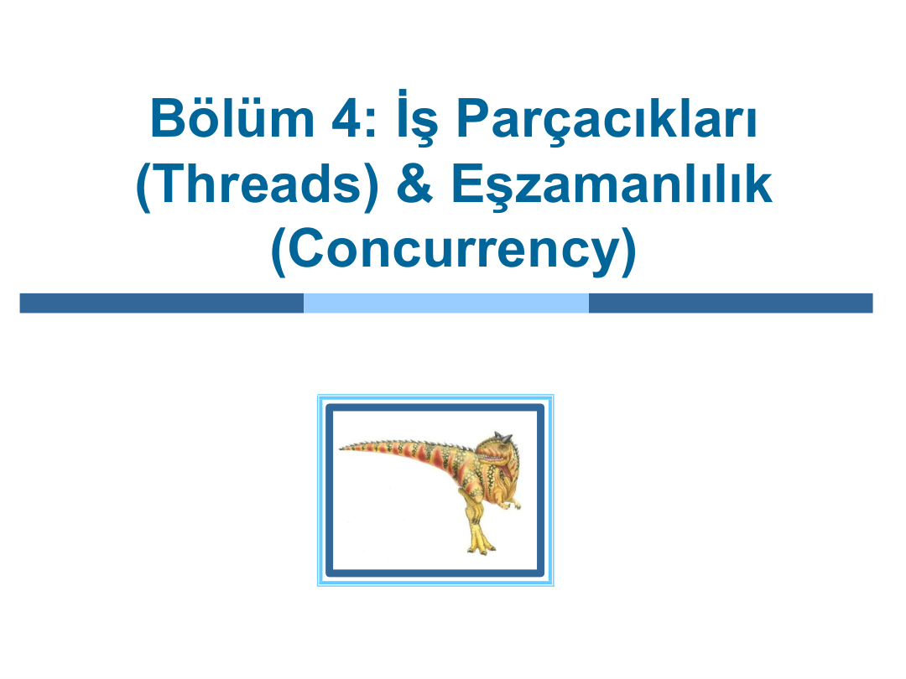
Özgün sunum sayfası • ch4_tr.pdf, PDF s. 1Ders notu
Bir proses çalışan programın kaynaklarını temsil eder; thread ise bu kaynaklar içinde ilerleyen bir yürütme akışıdır. Bu hafta önceki proses bilgisini genişleterek tek programın birden fazla işi nasıl ilerletebildiğini inceleyeceğiz.
Kaynak eşleştirmesi: ch4_threading.pdf, Bölüm 4.1, PDF s. 3–5; ch4_tr.pdf, PDF s. 1. Eşleştirme konu aralığı düzeyindedir.
SLAYT 02
Haftanın yol haritası
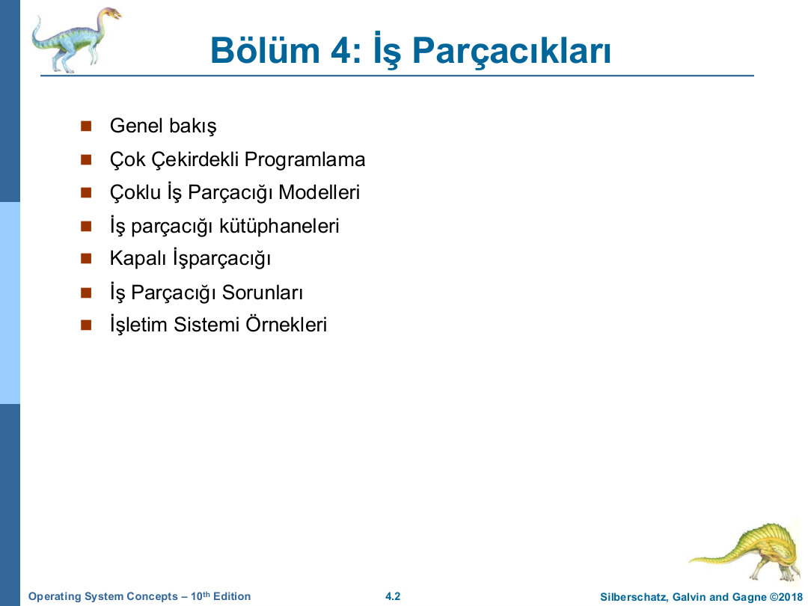
Özgün sunum sayfası • ch4_tr.pdf, PDF s. 2Ders notu
Önce thread’in neden gerekli olduğunu, sonra çekirdeklerle ilişkisini ele alacağız. Kullanıcı ve çekirdek thread modellerinden sonra kütüphaneler, görev havuzları ve çok thread’li programlamanın sorunlarına geçeceğiz. API isimlerinden önce çözülen problemi anlamak önemlidir.
Kaynak eşleştirmesi: ch4_threading.pdf, Bölüm 4.1, PDF s. 3–5; ch4_tr.pdf, PDF s. 2. Eşleştirme konu aralığı düzeyindedir.
SLAYT 03
Öğrenme hedefleri
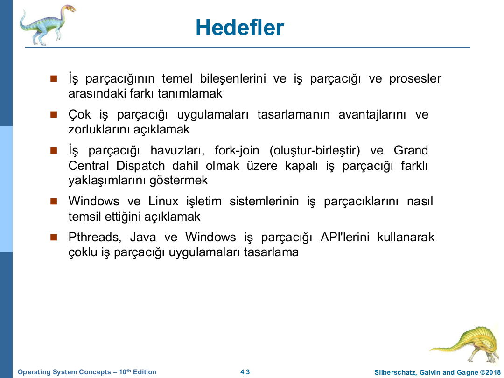
Özgün sunum sayfası • ch4_tr.pdf, PDF s. 3Ders notu
Hafta sonunda bir thread’in kendine ait durumunu ve prosesle paylaştığı kaynakları ayırabilmelisin. Eşzamanlılık ile paralelliği karşılaştırabilmeli; create/start ve join işlemlerini basit bir program üzerinde açıklayabilmelisin. İleri kütüphanelerde hedef, bütün ayrıntıları ezberlemek yerine görev yönetimi fikrini anlamaktır.
Kaynak eşleştirmesi: ch4_threading.pdf, Bölüm 4.1, PDF s. 3–5; ch4_tr.pdf, PDF s. 3. Eşleştirme konu aralığı düzeyindedir.
SLAYT 04
Neden birden fazla thread?
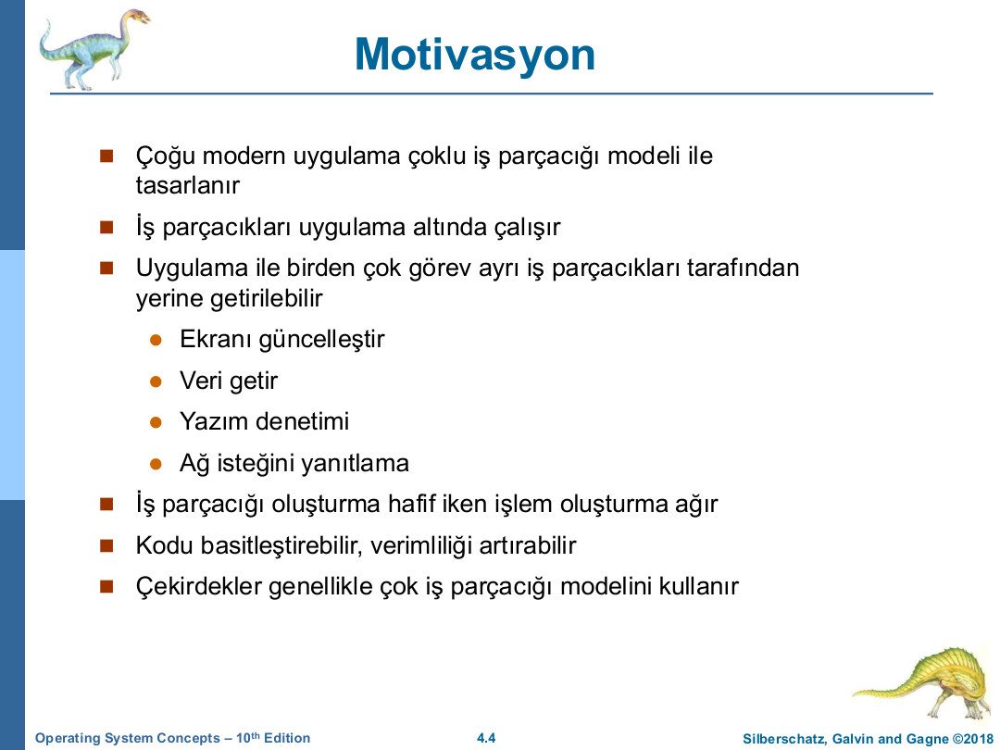
Özgün sunum sayfası • ch4_tr.pdf, PDF s. 4Ders notu
Bir uygulama ağdan veri beklerken kullanıcıya yanıt vermeye devam edebilir. Örneğin veri dosyası açılırken arayüzün donmaması için uzun iş başka bir yürütme akışına aktarılabilir. Bu düzen işlerin mutlaka daha kısa süreceği anlamına gelmez; ilk kazanç bazen yalnızca yanıt verebilirliktir.
Burada iki farklı soruyu ayırmak gerekir: “Kullanıcı beklerken programın başka bölümü çalışabiliyor mu?” ve “Hesaplama daha erken bitiyor mu?” İlk soru yanıt verebilirlikle, ikincisi performansla ilgilidir. Örneğin dosya indirme sırasında menülerin kullanılabilmesi, indirme hızının arttığını göstermez. Thread kullanımı, bekleme ile diğer işleri örtüştürerek uygulamanın daha kullanışlı davranmasını sağlayabilir.
Kaynak eşleştirmesi: ch4_threading.pdf, Bölüm 4.1, PDF s. 3–5; ch4_tr.pdf, PDF s. 4. Eşleştirme konu aralığı düzeyindedir.
SLAYT 05
Thread’in bileşenleri
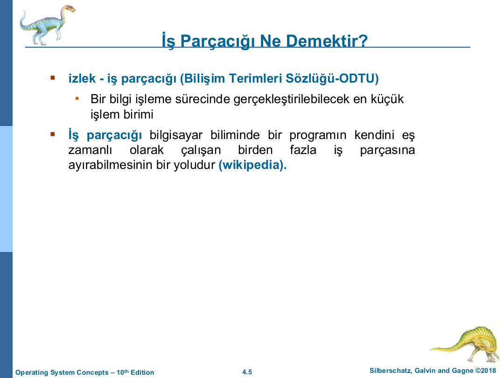
Özgün sunum sayfası • ch4_tr.pdf, PDF s. 5Ders notu
Thread’in kimliği, program sayacı, yazmaç durumu ve yığını vardır. Program sayacı hangi komutun yürütüleceğini, yığın ise fonksiyon çağrıları ve yerel değişkenler için gereken durumu izler. Aynı prosesteki thread’ler kodu, adres alanını ve açık dosyalar gibi kaynakları paylaşır. Ayrı yığın, belleğin diğer thread’lere karşı otomatik olarak korunduğu anlamına gelmez.
Bir fonksiyon çağrısı sırasında kullanılan yerel değişkenleri bir çalışma kâğıdı gibi düşünebilirsin. İki thread aynı fonksiyonu çağırdığında her çağrının ayrı çalışma durumu vardır. Buna karşılık prosesin ortak veri bölümündeki bir değişken, iki thread tarafından da görülebilir. “Değişken nerede tanımlı?” sorusuna ek olarak “Bu veriye hangi thread’ler erişebiliyor?” sorusunu sormak gerekir.
Kaynak eşleştirmesi: ch4_threading.pdf, Bölüm 4.1, PDF s. 3–5; ch4_tr.pdf, PDF s. 5. Eşleştirme konu aralığı düzeyindedir.
SLAYT 06
Şekli okuyalım: ortak kaynak, ayrı yürütme
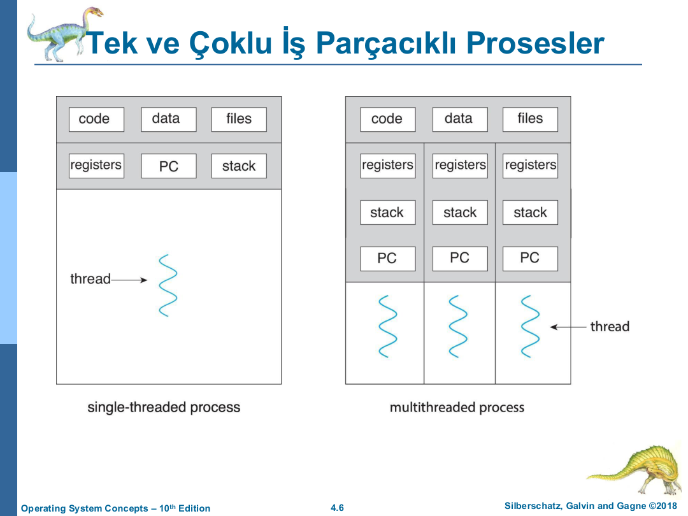
Özgün sunum sayfası • ch4_tr.pdf, PDF s. 6Ders notu
Şeklin üst bölümündeki kod, veri ve dosyalar proses düzeyinde ortaktır. Alt bölümde her thread için ayrı yazmaçlar, program sayacı ve yığın gösterilir. İki thread aynı fonksiyon kodunu çalıştırırken farklı çağrı durumlarına sahip olabilir. İki ayrı prosesin varsayılan olarak ayrı adres alanları bulunması, bu şekille önceki haftanın temel farkıdır.
Şekilde üç thread bulunması, üç ayrı program dosyası bulunduğunu göstermez. Aynı programın yürütme akışları farklı komutlarda bulunabilir: biri dosyadan okurken diğeri hesaplama yapabilir. CPU bir thread’den diğerine geçtiğinde devam edilecek komutun ve yazmaç durumunun korunması gerekir. İşte alttaki ayrı kutular bu gereksinimi temsil eder. Üstteki ortak kutular ise veri paylaşımını kolaylaştırırken koordinasyon ihtiyacını da doğurur.
Kaynak eşleştirmesi: ch4_threading.pdf, Bölüm 4.1, PDF s. 3–5; ch4_tr.pdf, PDF s. 6. Eşleştirme konu aralığı düzeyindedir.
SLAYT 07
Çok thread’li sunucu
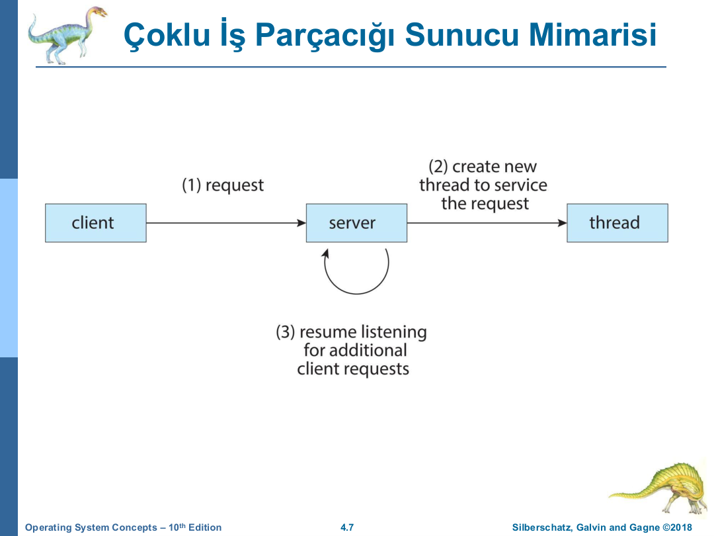
Özgün sunum sayfası • ch4_tr.pdf, PDF s. 7Ders notu
Sunucu isteği kabul eder, işlenmesini bir çalışana devreder ve yeni istekleri dinlemeyi sürdürür. Böylece uzun bir isteğin diğer bütün istemcileri bekletmesi azaltılabilir. Şekil kavramsal bir modeldir; sınırsız sayıda istek için sınırsız thread oluşturmak bellek ve zamanlama maliyetini artırır. Havuz yaklaşımı bu soruna ileride çözüm sunar.
Bir istemcinin isteğinin uzun sürdüğünü düşün. Tek yürütme akışı bu isteği tamamlamaya odaklanırsa yeni isteklerin kabulü veya işlenmesi gecikebilir. İsteği ayrı bir çalışana devretmek dinleme işinin sürmesini sağlar. Ancak ortak bir kayıt listesine veya dosyaya birden fazla çalışan erişiyorsa yeni bir sorun ortaya çıkar: erişimlerin birbirini bozmayacak şekilde düzenlenmesi. Dolayısıyla bu mimari hem fırsat hem koordinasyon sorumluluğu getirir.
Kaynak eşleştirmesi: ch4_threading.pdf, Bölüm 4.1, PDF s. 3–5; ch4_tr.pdf, PDF s. 7. Eşleştirme konu aralığı düzeyindedir.
SLAYT 08
Dört temel fayda
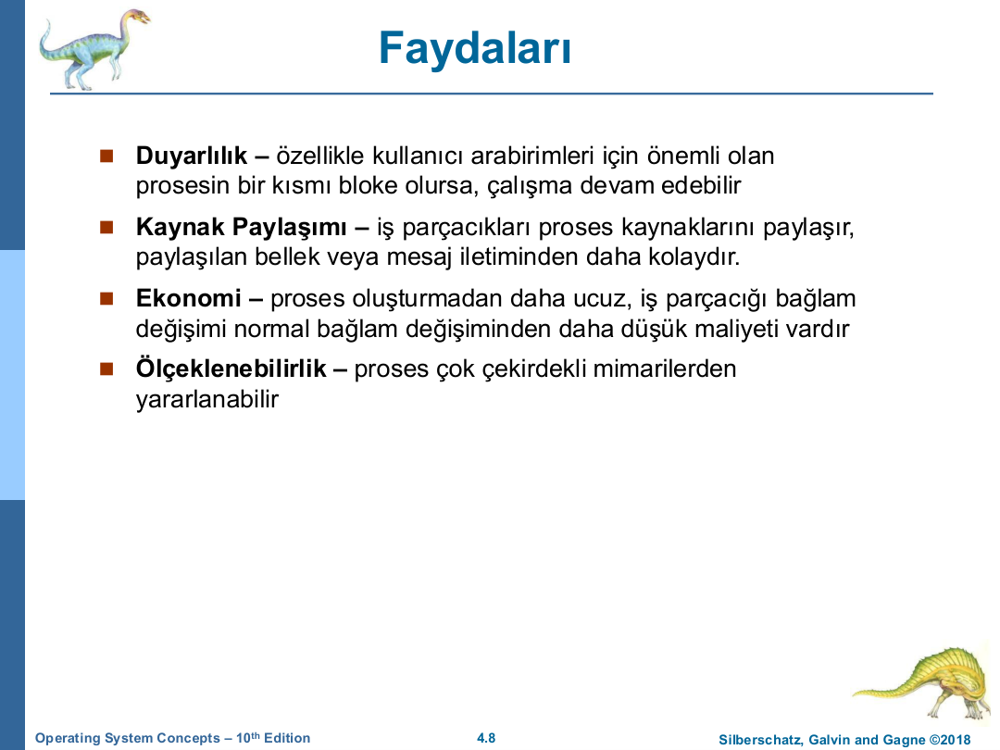
Özgün sunum sayfası • ch4_tr.pdf, PDF s. 8Ders notu
Yanıt verebilirlik, bekleyen bir iş sırasında diğer işlerin ilerlemesidir. Kaynak paylaşımı aynı adres alanında çalışmayı kolaylaştırır; ekonomi ise thread oluşturma ve geçiş maliyetlerinin çoğu durumda proseslere göre daha düşük olmasıdır. Ölçeklenebilirlik, uygun işleri birden fazla çekirdeğe dağıtabilmektir. Bu faydalar uygun iş bölümü ve doğru koordinasyon gerektirir.
Ekonomiyi değerlendirirken “daha düşük maliyet” ile “maliyetsiz” ifadelerini ayırmalısın. Her thread için yığın alanı, yürütme durumu ve zamanlama işlemleri gerekir. Çok sayıda thread, yapılacak işten daha fazla yönetim yükü oluşturabilir. Ölçeklenebilirlik de işin yapısına bağlıdır: birbirinden bağımsız görüntüleri işlemek uygun olabilirken her adımı öncekinin sonucunu bekleyen bir hesaplama aynı ölçüde yararlanamayabilir.
Kaynak eşleştirmesi: ch4_threading.pdf, Bölüm 4.1, PDF s. 3–5; ch4_tr.pdf, PDF s. 8. Eşleştirme konu aralığı düzeyindedir.
SLAYT 09
Çok çekirdek neden tek başına yeterli değildir?
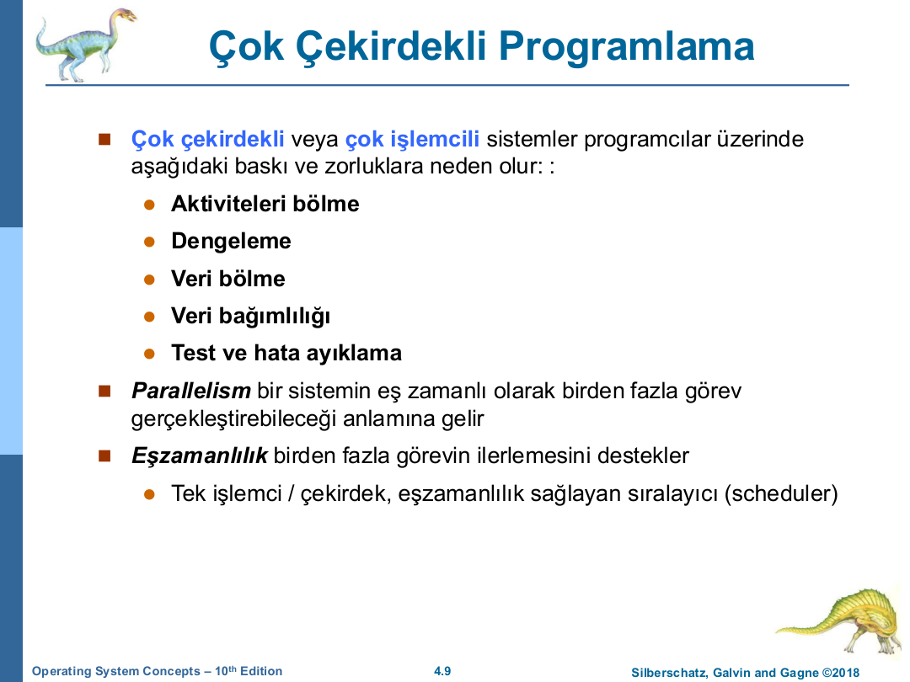
Özgün sunum sayfası • ch4_tr.pdf, PDF s. 9Ders notu
Programın bağımsız işlere ayrılması gerekir. Bir thread bütün işi yaparken diğerleri bekliyorsa çekirdekler boş kalabilir. Görevleri dengelemek, veriyi bölmek ve sonuçların birbirine bağımlılığını belirlemek programcının sorumluluklarıdır. Eşzamanlı programlarda yürütme sırası değişebildiğinden aynı hata her çalıştırmada görünmeyebilir.
İş bölme ile yük dengeleme aynı şey değildir. Dört parçaya ayrılan bir dosyada ilk parça çok pahalı işlemler gerektiriyorsa o parçayı alan thread daha geç bitebilir; diğer çalışanlar boşta bekleyebilir. Veri bağımlılığı ise bir görevin başlayabilmek için başka bir sonuca ihtiyaç duymasıdır. Bu bağımlılıkları görmeden yalnızca iş sayısını artırmak yeterli değildir. Testte farklı yürütme sıralarının oluşabilmesi de hataların tekrarını güçleştirir.
Kaynak eşleştirmesi: ch4_threading.pdf, Bölüm 4.2, PDF s. 5–9; ch4_tr.pdf, PDF s. 9. Eşleştirme konu aralığı düzeyindedir.
SLAYT 10
Eşzamanlılık ve paralellik
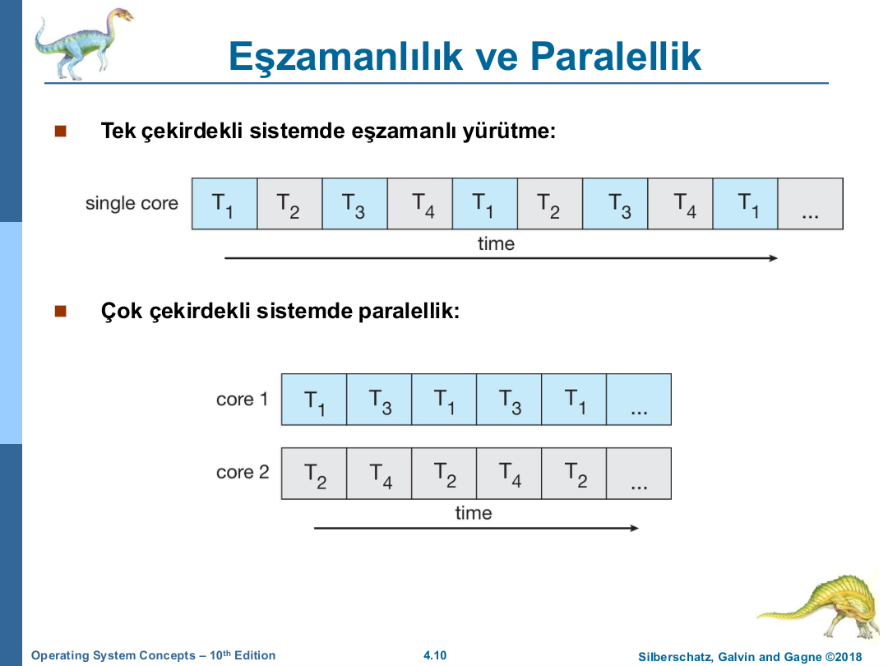
Özgün sunum sayfası • ch4_tr.pdf, PDF s. 10Ders notu
Eşzamanlılık birden fazla işin aynı zaman aralığında ilerlemesidir; tek çekirdekte zaman dilimleriyle sağlanabilir. Paralellik ise işlerin gerçekten aynı anda yürütülmesidir ve yeterli yürütme kaynağı gerektirir. Şekilde tek çekirdekteki T1/T2 dilimlerini, çok çekirdekte üst üste gelen dilimlerle karşılaştır. İki thread oluşturmak tek başına paralel yürütmeyi garanti etmez.
Bir zaman çizelgesinde T1 çalışırken T2’nin henüz tamamlanmamış olması eşzamanlı bir düzenin parçası olabilir. İkisinin aynı anda CPU komutu yürütmesi gerekmez. İki çekirdek üzerinde zaman aralıkları örtüşüyorsa paralel yürütme mümkündür. Bunu sınıfta iki öğrencinin tek kalemi sırayla kullanması ve iki kalemle aynı anda yazması üzerinden düşünebilirsin; benzetmede kalem yürütme kaynağını temsil eder, thread ise işi yapan akıştır.
Kaynak eşleştirmesi: ch4_threading.pdf, Bölüm 4.2, PDF s. 5–9; ch4_tr.pdf, PDF s. 10. Eşleştirme konu aralığı düzeyindedir.
SLAYT 11
Veri paralelliği ve görev paralelliği
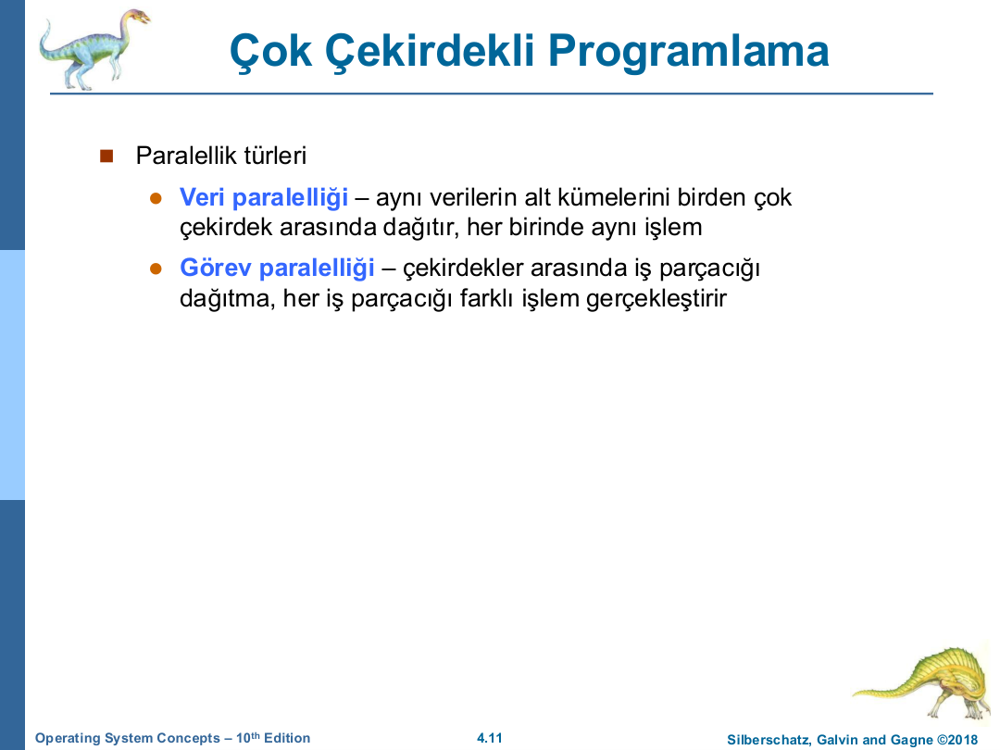
Özgün sunum sayfası • ch4_tr.pdf, PDF s. 11Ders notu
Veri paralelliğinde aynı işlem farklı veri parçalarında çalışır: bir tablonun farklı satır gruplarının ortalamasını hesaplamak gibi. Görev paralelliğinde farklı işler yürütülür: bir görev veri okurken diğeri önceden okunmuş veriyi dönüştürebilir. Bir uygulama iki yaklaşımı birlikte kullanabilir; veri bağımlılıkları yine dikkate alınmalıdır.
Bir milyon satırlık veriyi dört gruba ayırıp her grubun eksik değer sayısını hesaplamak veri paralelliğidir. Son aşamada dört kısmi sayım birleştirilir. Buna karşılık veri okuma, dönüştürme ve sonuç yazma birbirinden farklı görevlerdir. Bu görevler farklı veri parçaları üzerinde örtüşerek çalışabilir. Her iki yaklaşımda da sonucun doğru olması için hangi verinin hangi aşamada hazır olduğunun belirlenmesi gerekir.
Kaynak eşleştirmesi: ch4_threading.pdf, Bölüm 4.2, PDF s. 5–9; ch4_tr.pdf, PDF s. 11. Eşleştirme konu aralığı düzeyindedir.
SLAYT 12
Şekli okuyalım: hangi şey bölünüyor?
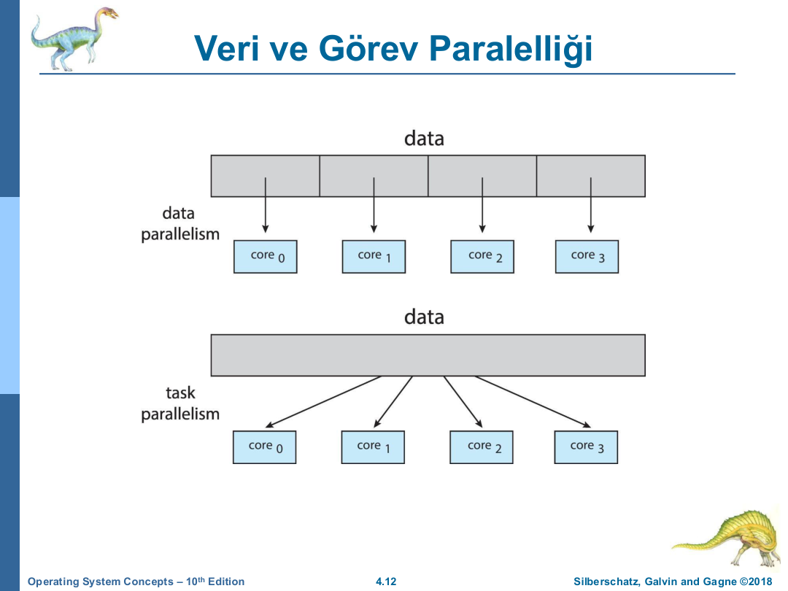
Özgün sunum sayfası • ch4_tr.pdf, PDF s. 12Ders notu
Üstte veri bölünür ve çekirdekler benzer hesaplamaları farklı alt kümelerde yapar. Altta çekirdeklere farklı görevler atanır. Veri Bilimi için aynı temizleme kuralının dosya parçalarına uygulanması ilkine, okuma-dönüştürme-kaydetme hattı ikincisine örnektir. Hat aşamaları arasında veri aktarımı ve bekleme gerekebilir.
Şekli incelerken önce “Her çekirdek aynı kodu mu uyguluyor?” diye sor. Yanıt evetse ve veri parçaları farklıysa veri paralelliği düşünülür. Ardından “Çekirdekler farklı sorumluluklar mı üstleniyor?” sorusuna geç. Aynı veri üzerinde farklı analizlerin yapılması görev paralelliğine örnek olabilir. Buradaki ayrım fiziksel çekirdek çiziminin biçimine değil, işin ve verinin nasıl paylaştırıldığına dayanır.
Kaynak eşleştirmesi: ch4_threading.pdf, Bölüm 4.2, PDF s. 5–9; ch4_tr.pdf, PDF s. 12. Eşleştirme konu aralığı düzeyindedir.
SLAYT 13
Amdahl yasası
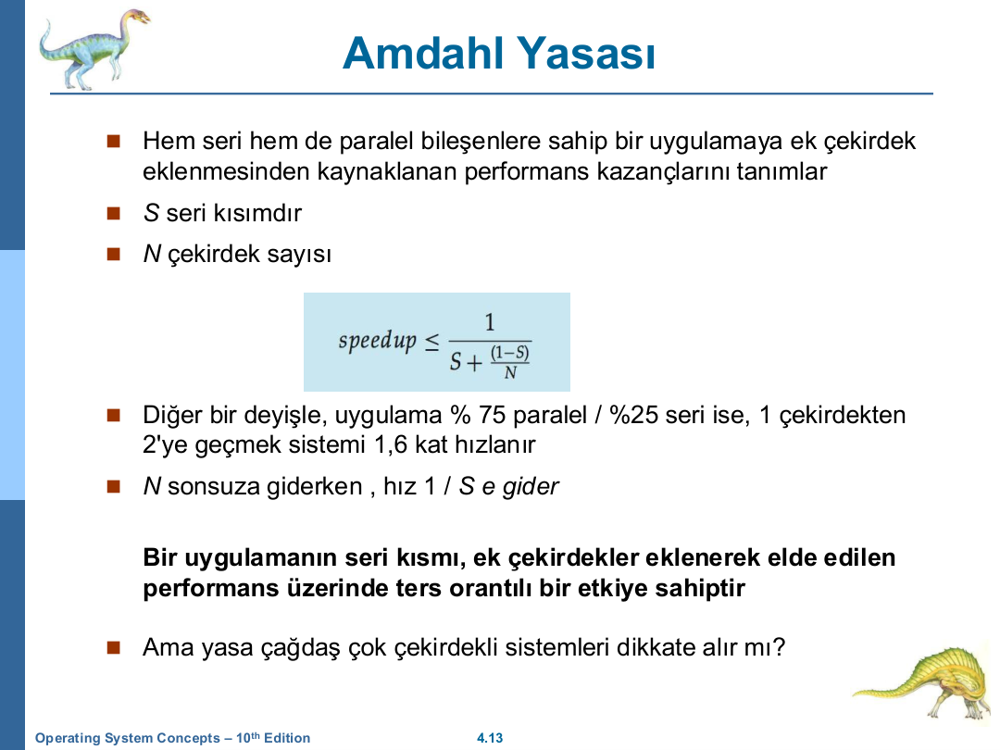
Özgün sunum sayfası • ch4_tr.pdf, PDF s. 13Ders notu
İdeal hızlanma 1 / (S + (1-S)/N) ile modellenir; S seri kalan oran, N çekirdek sayısıdır. İşin yüzde 25’i seri ise iki çekirdekte hızlanma 1,6; dört çekirdekte yaklaşık 2,29 olur. Bu model sabit iş yükü ve ek maliyetlerin ihmal edilmesi varsayımlarına dayanır. Gerçekte haberleşme ve koordinasyon maliyetleri kazancı azaltabilir.
Hesabı süre üzerinden okuyalım: iş tek çekirdekte 100 saniye sürüyorsa 25 saniye seri, 75 saniye paralelleştirilebilir olsun. İki çekirdekte ideal süre 25+75/2=62,5 saniyedir; hızlanma 100/62,5=1,6 olur. Dört çekirdekte süre 43,75 saniye ve hızlanma yaklaşık 2,29’dur. Yüzde 25 seri bölümün kendisi 25 saniyelik alt sınır oluşturur. Bu nedenle çekirdek sayısıyla hızlanma oranı aynı sayı değildir.
Kaynak eşleştirmesi: ch4_threading.pdf, Bölüm 4.2, PDF s. 5–9; ch4_tr.pdf, PDF s. 13. Eşleştirme konu aralığı düzeyindedir.
SLAYT 14
Grafiğin anlattığı sınır
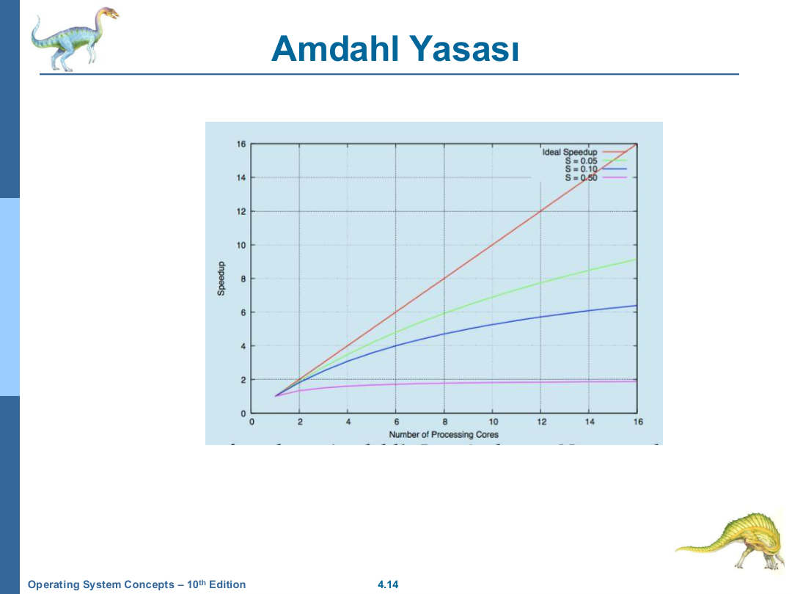
Özgün sunum sayfası • ch4_tr.pdf, PDF s. 14Ders notu
Eğri başlangıçta yükselir, fakat seri bölüm yüzünden giderek yataylaşır. S=0,25 için çekirdek sayısı çok büyüse bile ideal sınır 4 kattır. Dolayısıyla yalnızca donanımı artırmak yerine seri kalan aşamayı da incelemek gerekir. Veri okuma veya sonuçları tek dosyada birleştirme bu aşama olabilir.
Farklı eğriler farklı seri oranları temsil eder. Seri oran küçüldükçe daha fazla çekirdekten yararlanma potansiyeli artar. Ancak eğrinin yataylaşmasını “artık hiçbir iyileştirme yapılamaz” diye okumamalısın: algoritmayı değiştirerek seri bölümü azaltmak mümkündür. Yasa belirli bir iş bölümü ve iş yükü altında sınır gösterir. Gerçek ölçüm yaparken görev oluşturma, veri taşıma ve bekleme sürelerini de toplam süreye katmak gerekir.
Kaynak eşleştirmesi: ch4_threading.pdf, Bölüm 4.2, PDF s. 5–9; ch4_tr.pdf, PDF s. 14. Eşleştirme konu aralığı düzeyindedir.
SLAYT 15
Kullanıcı ve çekirdek düzeyleri
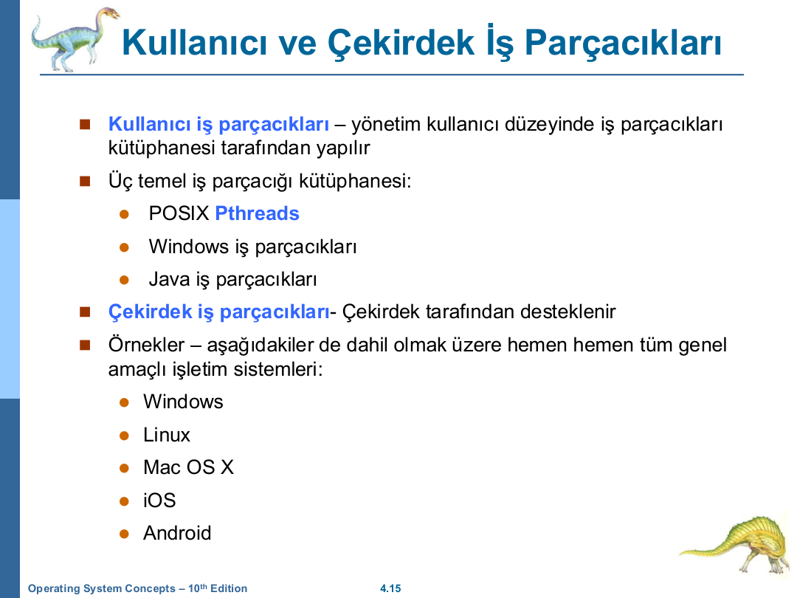
Özgün sunum sayfası • ch4_tr.pdf, PDF s. 15Ders notu
Kullanıcı düzeyindeki thread yönetimi kütüphane veya çalışma zamanı tarafından yürütülebilir; çekirdek thread’leri işletim sisteminin zamanladığı varlıklardır. Bir programlama API’sinin görünümü, arkasındaki eşleme modelini tek başına belirlemez. Pthreads bir API standardıdır; kullanıcı/çekirdek ayrımı ile programlama dili ayrımını karıştırmamak gerekir.
Bu ayrım iki bakış açısı sunar. Programcı açısından thread, oluşturup iş verdiği yürütme akışıdır. İşletim sistemi açısından ise zamanlanabilen ve durumu saklanan bir varlık gerekir. Çalışma zamanı bu ikisi arasında aracılık edebilir. Bu yüzden bir dilde binlerce görev nesnesi oluşturulması, çekirdekte aynı sayıda thread bulunduğunu tek başına kanıtlamaz. Görev, kullanıcı thread’i ve çekirdek thread’i kavramları bağlamına göre ayrılmalıdır.
Kaynak eşleştirmesi: ch4_threading.pdf, Bölüm 4.3, PDF s. 9–11; ch4_tr.pdf, PDF s. 15. Eşleştirme konu aralığı düzeyindedir.
SLAYT 16
Şekli okuyalım: iki düzey
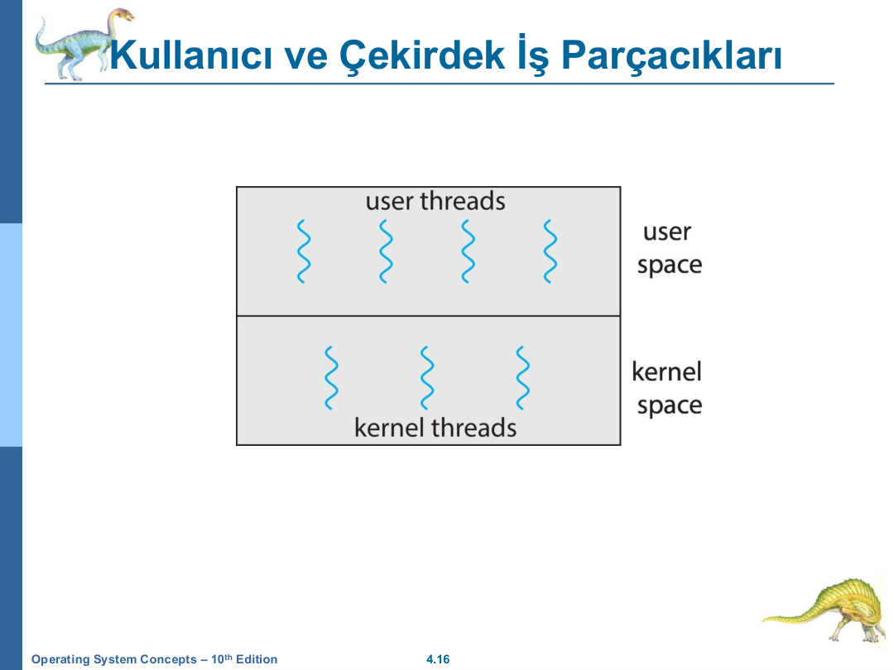
Özgün sunum sayfası • ch4_tr.pdf, PDF s. 16Ders notu
Şekilde üst sıra uygulamanın gördüğü thread’leri, alt sıra çekirdeğin yönetebildiği thread’leri temsil eder. Aradaki çizgiler eşlemeyi gösterir. Paralellik kapasitesini değerlendirirken yalnızca üst sıradaki thread sayısını saymak yeterli değildir; çekirdeğe kaç bağımsız yürütme biriminin sunulduğuna bakılır.
Şekilde bir kullanıcı thread’i bloklandığında ne olacağını anlamak için bağlantı çizgilerini izle. Altta yalnızca tek yürütme birimi varsa onun bloklanması üstteki bütün işlerin ilerlemesini etkileyebilir. Altta birden fazla bağımsız birim varsa başka bir thread çalışmaya devam edebilir. Bu görsel, bir sonraki modelleri karşılaştırmak için ortak bir okuma yöntemi sağlar: önce üstteki sayıyı, sonra alttaki sayıyı ve eşlemeyi belirle.
Kaynak eşleştirmesi: ch4_threading.pdf, Bölüm 4.3, PDF s. 9–11; ch4_tr.pdf, PDF s. 16. Eşleştirme konu aralığı düzeyindedir.
SLAYT 17
Üç eşleme yaklaşımı
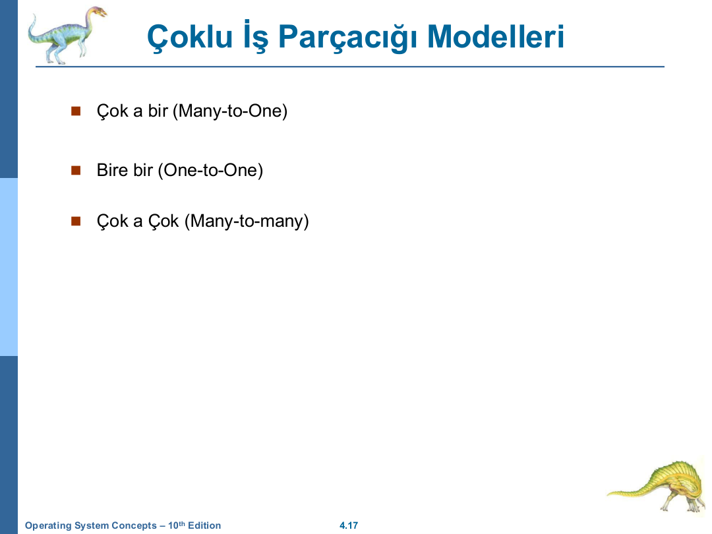
Özgün sunum sayfası • ch4_tr.pdf, PDF s. 17Ders notu
Many-to-one, çok sayıda kullanıcı thread’ini tek çekirdek thread’ine; one-to-one her birini ayrı çekirdek thread’ine eşler. Many-to-many ise kullanıcı thread’lerini birden fazla çekirdek thread’i üzerinde çalıştırır. Bu modeller yönetim maliyeti, bloklanma ve paralellik arasında farklı dengeler kurar.
Modelleri üç soruyla karşılaştırabilirsin: Bir thread beklediğinde diğerleri ilerleyebiliyor mu? Birden fazla çekirdek kullanılabiliyor mu? Thread oluşturmanın yönetim maliyeti hangi düzeyde ortaya çıkıyor? Tek başına model adı bütün performansı belirlemez; uygulamanın iş yükü ve çalışma zamanının politikası da önemlidir. Ancak bu sorular temel avantaj ve sınırlılıkları sistematik biçimde görmeyi sağlar.
Kaynak eşleştirmesi: ch4_threading.pdf, Bölüm 4.3, PDF s. 9–11; ch4_tr.pdf, PDF s. 17. Eşleştirme konu aralığı düzeyindedir.
SLAYT 18
Çoktan bire model
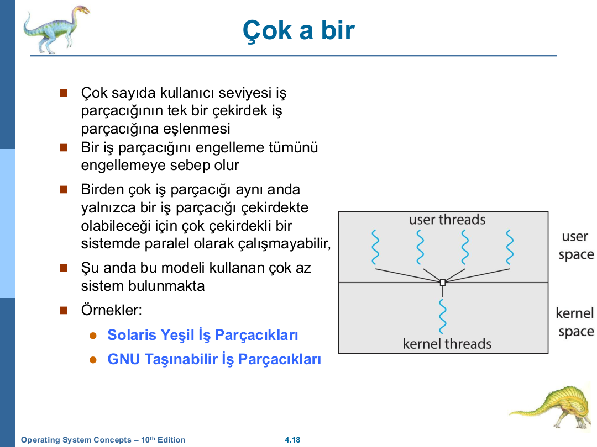
Özgün sunum sayfası • ch4_tr.pdf, PDF s. 18Ders notu
Kullanıcı thread’leri tek çekirdek thread’i üzerinde çoğullanır. Bu model kendi başına aynı anda birden fazla çekirdekte yürütme sağlayamaz. Bloklayan bir sistem çağrısı alttaki tek çekirdek thread’ini durdurursa diğer kullanıcı thread’leri de ilerleyemez. Slayttaki sistem isimleri tarihsel örnekler olarak okunmalıdır.
Örneğin kullanıcı alanındaki zamanlayıcı A, B ve C işlerini dönüşümlü ilerletsin. Çekirdek bu üç işi ayrı ayrı görmek yerine tek bir thread görür. Kullanıcı alanındaki geçişlerin yönetimi esnek olabilir; fakat çekirdek aynı anda bu tek varlığı iki çekirdekte çalıştıramaz. Bu sınırlama kullanıcı görevlerinin sayısını artırarak aşılmaz. Bloklanma etkisi açıklanırken de bütün kütüphanelerin aynı I/O stratejisini kullandığı varsayılmamalıdır.
Kaynak eşleştirmesi: ch4_threading.pdf, Bölüm 4.3, PDF s. 9–11; ch4_tr.pdf, PDF s. 18. Eşleştirme konu aralığı düzeyindedir.
SLAYT 19
Bire bir model
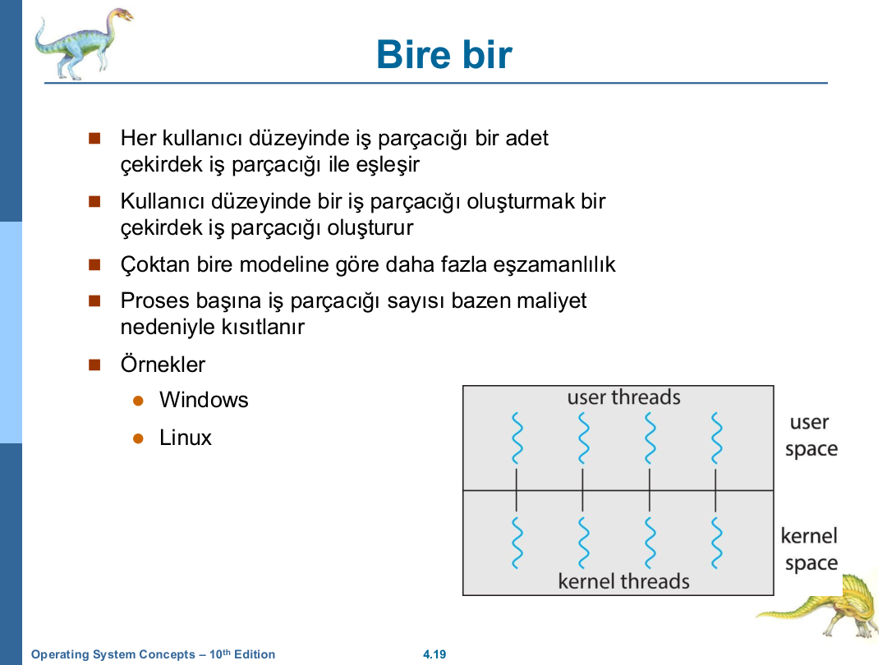
Özgün sunum sayfası • ch4_tr.pdf, PDF s. 19Ders notu
Her kullanıcı thread’inin çekirdekte karşılığı vardır. Bir thread beklerken diğerleri zamanlanabilir; yeterli çekirdek varsa paralellik mümkündür. Bunun karşılığında her yeni thread için çekirdek kaynakları gerekir. Bu nedenle thread sayısını artırmak her zaman verimliliği artırmaz.
Örneğin A thread’i dosya erişimini beklerken B thread’i hesaplama için zamanlanabilir. İki çalışabilir thread ve yeterli yürütme kaynağı varsa ikisi paralel ilerleyebilir. Fakat her thread’in çekirdek tarafından izlenmesi kaynak tüketir. Uygulama için uygun thread sayısı, yalnızca toplam görev sayısına bakılarak seçilmez; görevlerin CPU kullanımı, bekleme davranışı ve bellek gereksinimleri birlikte değerlendirilir.
Kaynak eşleştirmesi: ch4_threading.pdf, Bölüm 4.3, PDF s. 9–11; ch4_tr.pdf, PDF s. 19. Eşleştirme konu aralığı düzeyindedir.
SLAYT 20
Çoktan çoğa model
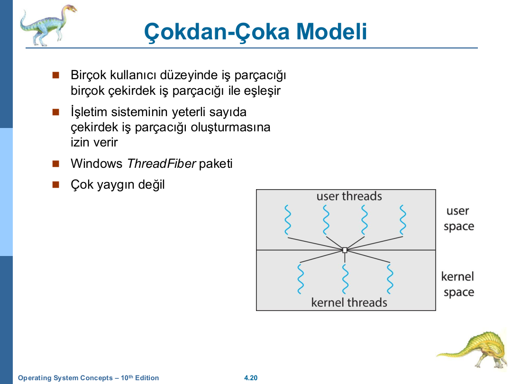
Özgün sunum sayfası • ch4_tr.pdf, PDF s. 20Ders notu
Çalışma zamanı çok sayıda kullanıcı thread’ini bir çekirdek thread’i kümesine dağıtır. Böylece kullanıcı düzeyindeki görev sayısı ile çekirdekteki yürütme birimi sayısı ayrılabilir. Yönetim esnektir, ancak iki düzeyin koordinasyonu karmaşıklaşır. Buradaki ürün isimleri bölümün tarihsel bağlamındadır.
Bu modelde kullanıcı düzeyindeki görevlerin sayısı alttaki yürütme birimlerinden fazla olabilir. Çalışma zamanı uygun bir kullanıcı thread’ini uygun çekirdek thread’i üzerinde çalıştırır; biten veya bekleyen işin yerine başka bir işi koyabilir. Amaç, çok sayıda uygulama akışını yönetirken alttaki kaynakları kontrollü kullanmaktır. Bunun karşılığında bloklanma ve zamanlama olaylarının iki düzey arasında doğru biçimde iletilmesi gerekir.
Kaynak eşleştirmesi: ch4_threading.pdf, Bölüm 4.3, PDF s. 9–11; ch4_tr.pdf, PDF s. 20. Eşleştirme konu aralığı düzeyindedir.
SLAYT 21
İki düzeyli model
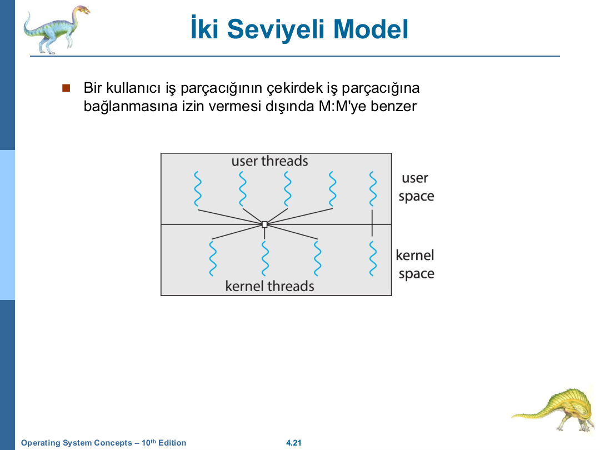
Özgün sunum sayfası • ch4_tr.pdf, PDF s. 21Ders notu
Bu yaklaşım çoktan çoğa modele ek olarak belirli kullanıcı thread’lerinin belirli çekirdek thread’lerine bağlanmasına izin verir. Genel görevler esnek biçimde dağıtılırken bazı görevler için daha doğrudan eşleme sağlanır. Ana fikir bütün görevlerin aynı bağlanma politikasına sahip olmak zorunda olmamasıdır.
Bir bağlama ilişkisini, belirli bir yürütme akışının alttaki belirli karşılığıyla ilişkisinin korunması olarak düşünebilirsin. Diğer kullanıcı thread’leri daha esnek dağıtılırken bağlı thread için bu ilişki daha doğrudandır. Şekli yorumlarken hem çoktan çoğa bağlantıları hem de özel bağlanma çizgisini bul. Modelin amacı farklı gereksinimlere tek bir eşleme politikası dayatmamaktır; bunun bedeli yönetimin daha karmaşık olmasıdır.
Kaynak eşleştirmesi: ch4_threading.pdf, Bölüm 4.3, PDF s. 9–11; ch4_tr.pdf, PDF s. 21. Eşleştirme konu aralığı düzeyindedir.
SLAYT 22
Kütüphane ne sağlar?
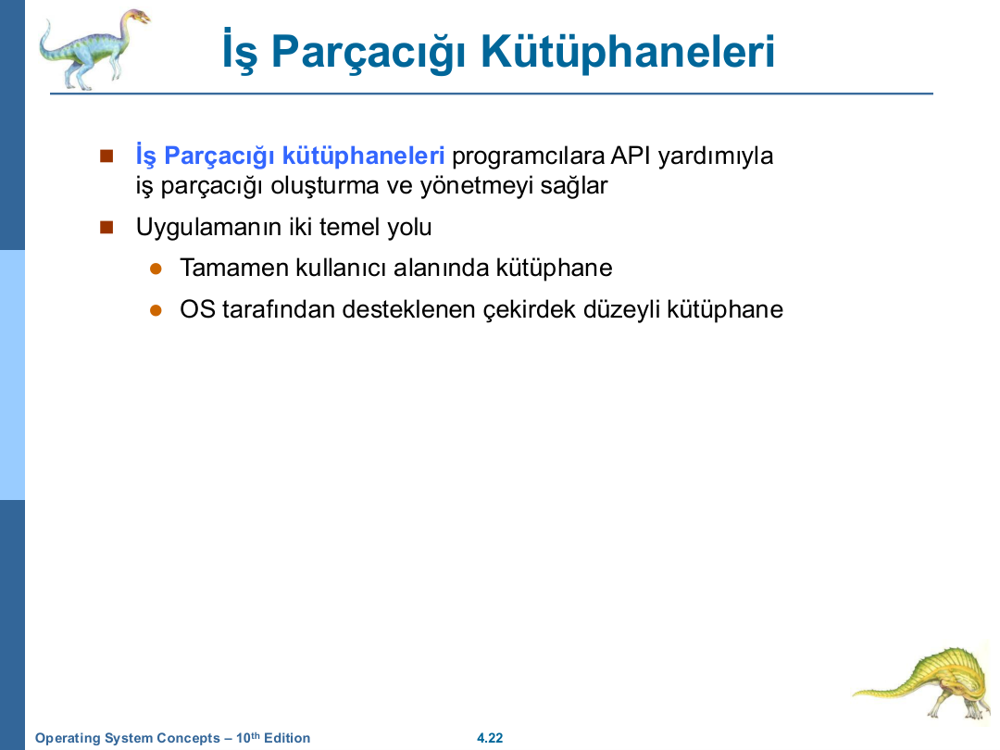
Özgün sunum sayfası • ch4_tr.pdf, PDF s. 22Ders notu
Thread kütüphanesi oluşturma, bekleme ve koordinasyon için programlama arayüzü sunar. Programcı API’yi çağırır; alt uygulama kullanıcı alanında veya işletim sistemi desteğiyle çalışabilir. Kütüphane kullanmak paylaşılan verinin otomatik olarak doğru yönetileceği anlamına gelmez.
API ile uygulama ayrımı burada önemlidir. API, programcının hangi işlemleri hangi parametrelerle isteyebileceğini tanımlar. Kütüphanenin uygulanışı ise bu isteğin işletim sistemi ve çalışma zamanı mekanizmalarıyla nasıl yerine getirildiğidir. Aynı kavram farklı dillerde farklı isimlerle görünebilir. Yeni bir kütüphane incelerken önce oluşturma, tamamlanmayı bekleme, sonuç alma ve kaynakları bırakma işlemlerinin karşılıklarını bulmak yararlı bir yöntemdir.
Kaynak eşleştirmesi: ch4_threading.pdf, Bölüm 4.4.1, PDF s. 12–14; ch4_tr.pdf, PDF s. 22. Eşleştirme konu aralığı düzeyindedir.
SLAYT 23
Pthreads standardı
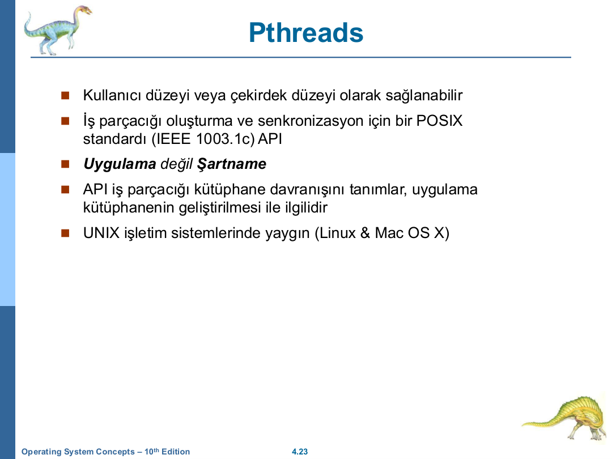
Özgün sunum sayfası • ch4_tr.pdf, PDF s. 23Ders notu
Pthreads belirli bir ürün adı yerine POSIX thread işlemlerinin arayüz ve davranış sözleşmesidir. pthread_create yeni yürütme akışını başlatmak, pthread_join belirli bir thread’in bitmesini beklemek için kullanılır. Fonksiyonların dönüş değerleri kontrol edilmelidir; öğretim örnekleri bu kontrolleri bazen kısaltır.
POSIX standardı bir fonksiyonun nasıl çağrılacağına ve beklenen davranışına ilişkin ortak bir sözleşme sağlar. Bu, her sistemin iç veri yapılarının aynı olduğu anlamına gelmez. Pthreads kodunu okurken pthread_t türünü sıradan bir sayaç gibi yorumlamak yerine thread’i tanımlamak için kullanılan bir tür olarak görmelisin. Ayrıca pthread fonksiyonları hata durumunu dönüş değeriyle bildirebilir; başarısız bir oluşturma işleminden sonra normal akışa devam etmek doğru değildir.
Kaynak eşleştirmesi: ch4_threading.pdf, Bölüm 4.4.1, PDF s. 12–14; ch4_tr.pdf, PDF s. 23. Eşleştirme konu aralığı düzeyindedir.
SLAYT 24
Pthreads: ana programı adım adım okuyalım
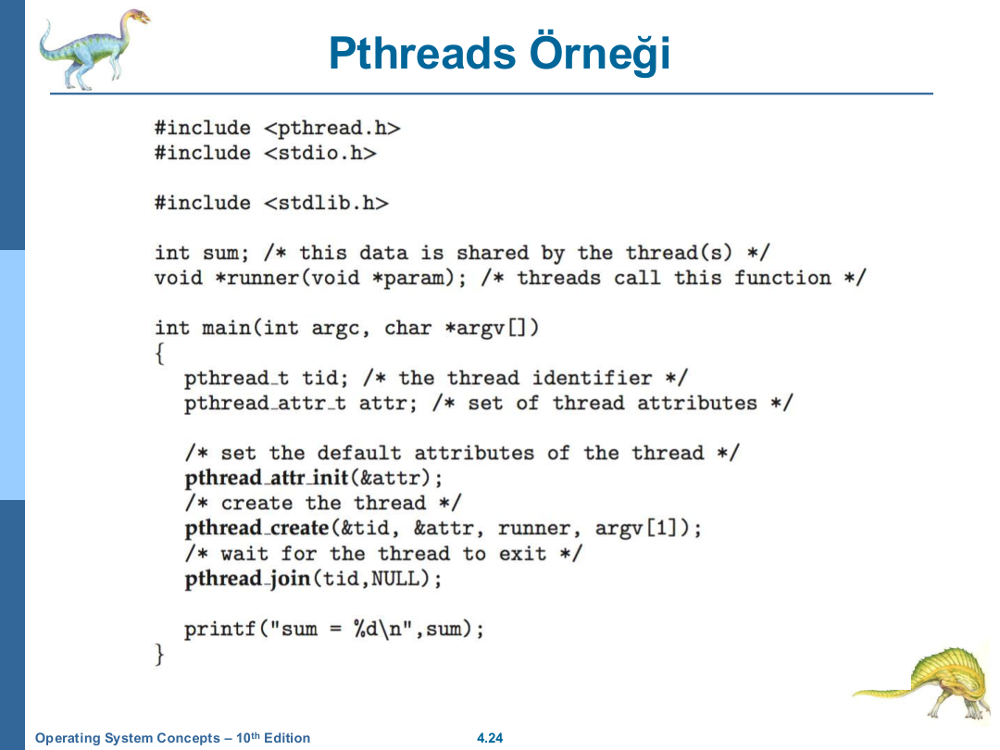
Özgün sunum sayfası • ch4_tr.pdf, PDF s. 24Ders notu
pthread_t tid oluşturulacak thread’in tanıtıcısını tutar; pthread_attr_t attr özellikler içindir. pthread_attr_init varsayılan özellikleri hazırlar. pthread_create çağrısındaki &tid kimliğin yazılacağı yeri, &attr özellikleri, runner çalışacak fonksiyonu, argv[1] ise ona iletilen metni belirtir. pthread_join(tid,NULL) ana thread’i çalışan bitene kadar bekletir; bundan sonra sum yazdırılır. sum proses düzeyindeki ortak değişkendir. Slayttaki kısa örnek, argüman ve hata denetimi eklenmeden kullanılmamalıdır.
Akışı sıraya koyarsak ana program önce parametreleri ve özellikleri hazırlar, sonra çalışanı oluşturur ve join noktasına gelir. Çalışan ise runner fonksiyonuna verilen argümanı alır ve hesabı yapar. Bu iki akışın hangi anda CPU alacağını programın satır sırası tek başına belirlemez. & işareti ilgili değişkenin adresini iletir; böylece fonksiyon çağıranın değişkenine bilgi yazabilir. NULL ise bu örnekte join üzerinden ayrı bir dönüş işaretçisi alınmadığını belirtir.
Kaynak eşleştirmesi: ch4_threading.pdf, Bölüm 4.4.1, PDF s. 12–14; ch4_tr.pdf, PDF s. 24. Eşleştirme konu aralığı düzeyindedir.
SLAYT 25
Pthreads: çalışan fonksiyon
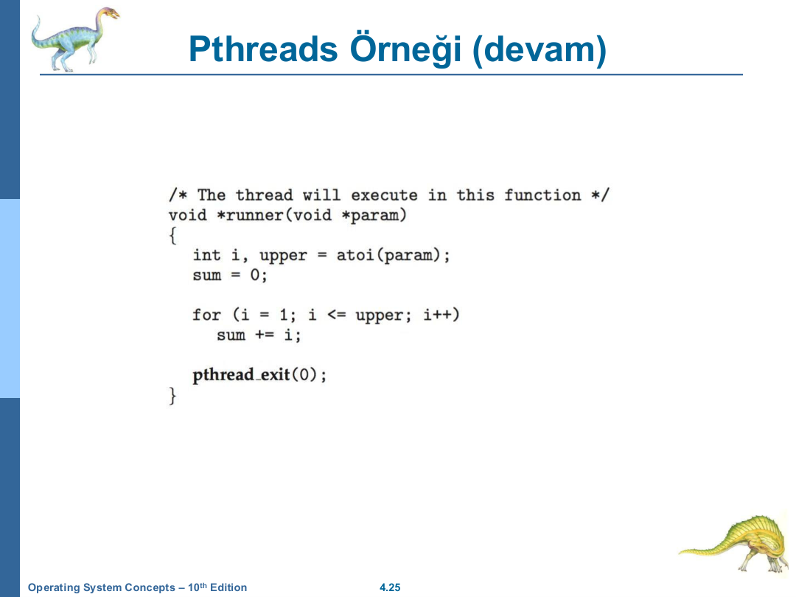
Özgün sunum sayfası • ch4_tr.pdf, PDF s. 25Ders notu
void *param genel bir işaretçidir; bu örnekte komut satırından gelen sayı metnini gösterir. atoi bu metni sayıya çevirir; döngü 1’den upper değerine kadar sayıları sum içinde biriktirir. pthread_exit çalışanı sonlandırır. Girdi 5 ise beklenen toplam 15’tir. Burada yalnızca çalışan yazdığı ve ana thread join sonrasında okuduğu için bu kullanım, aynı değişkene eşzamanlı iki yazıcılı örnekten farklıdır.
Döngüyü girdi 5 için elle izleyelim: başlangıçta toplam 0’dır; sırasıyla 1, 2, 3, 4 ve 5 eklenince toplamlar 1, 3, 6, 10 ve 15 olur. Burada upper bir sınır, i döngü sayacı ve sum sonuçtur. atoi geçersiz girdiyi güvenilir biçimde raporlayan bir doğrulama mekanizması değildir; slayt algoritmayı göstermek için kısaltılmıştır. Hazır uygulama dosyasında sabit küçük girdi kullanılarak temel thread akışı daha açık tutulmuştur.
Kaynak eşleştirmesi: ch4_threading.pdf, Bölüm 4.4.1, PDF s. 12–14; ch4_tr.pdf, PDF s. 25. Eşleştirme konu aralığı düzeyindedir.
SLAYT 26
Birden fazla thread’i beklemek
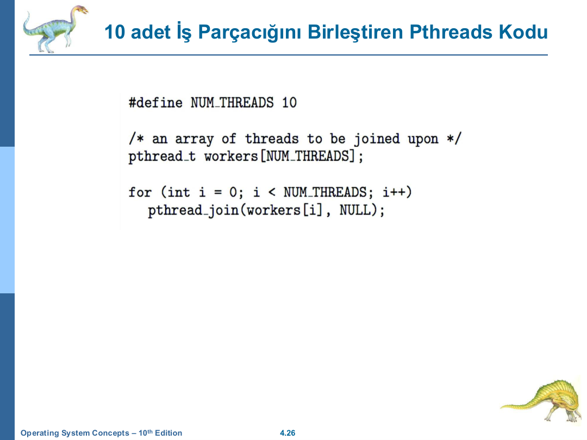
Özgün sunum sayfası • ch4_tr.pdf, PDF s. 26Ders notu
workers dizisi thread kimliklerini tutar. Döngüdeki her pthread_join çağrısı ilgili thread’in bitmesini bekler; bu satırlar thread oluşturmaz. Thread’ler önceden başlatılmışsa join çağrılarının sırayla yazılması, hesaplamaların mutlaka sırayla yapıldığı anlamına gelmez. Bekleme sırası ile çalışma sırası ayrı kavramlardır.
A, B ve C thread’lerinin önceden başlatıldığını varsay. Ana thread önce A için join çağırırken B ve C çalışıyor veya tamamlanmış olabilir. A bittikten sonra B için yapılan join, B zaten bittiyse uzun bir bekleme gerektirmez. Dolayısıyla “önce A’yı bekle” ifadesi “önce yalnızca A çalışsın” anlamına gelmez. Thread oluşturma döngüsü ile thread bekleme döngüsünü ayırarak okumak bu yanılgıyı azaltır.
Kaynak eşleştirmesi: ch4_threading.pdf, Bölüm 4.4.1, PDF s. 12–14; ch4_tr.pdf, PDF s. 26. Eşleştirme konu aralığı düzeyindedir.
SLAYT 27
Windows örneğinde çalışan fonksiyon
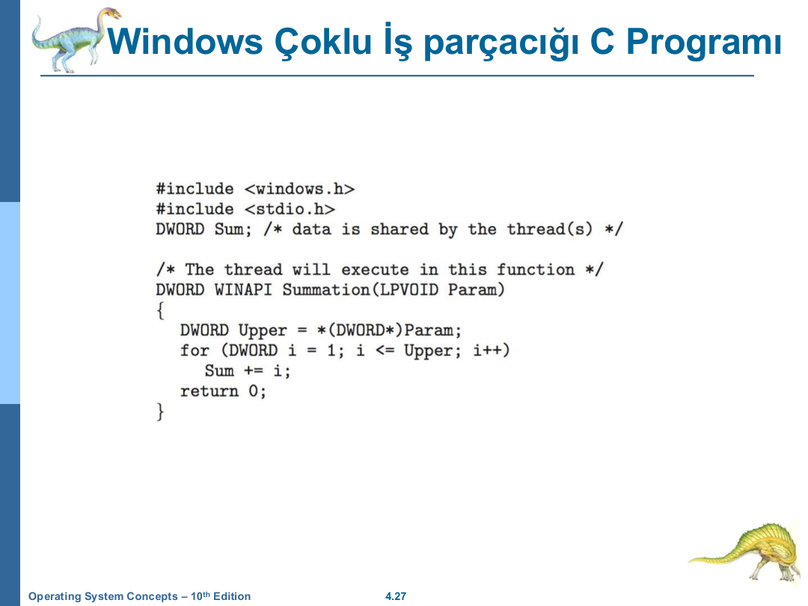
Özgün sunum sayfası • ch4_tr.pdf, PDF s. 27Ders notu
DWORD Sum paylaşılan toplamı tutar. Summation fonksiyonu kendisine iletilen üst sınıra kadar toplama yapar ve Windows API’sinin beklediği dönüş türünü kullanır. İşaretçi ve tür dönüşümlerini bir veri aktarım sözleşmesi olarak düşün: çağıran taraf ile çalışan taraf aynı verinin nasıl yorumlanacağı konusunda anlaşmalıdır.
Kodda farklı tür adları görülmesi temel algoritmanın değiştiği anlamına gelmez. Yine üst sınırı alıp 1’den o değere kadar toplama yapan bir çalışan vardır. Platforma özgü tür ve fonksiyonlar bu çalışanın işletim sistemine tanıtılma biçimini belirler. Bu sayfada önce hesaplama gövdesini bul, sonra parametrenin nereden geldiğini izle. Parametrenin yaşam süresi çalışan onu kullanırken sona ermemelidir.
Kaynak eşleştirmesi: ch4_threading.pdf, Bölüm 4.4.2, PDF s. 14–16; ch4_tr.pdf, PDF s. 27. Eşleştirme konu aralığı düzeyindedir.
SLAYT 28
Windows örneğinde başlatma ve bekleme
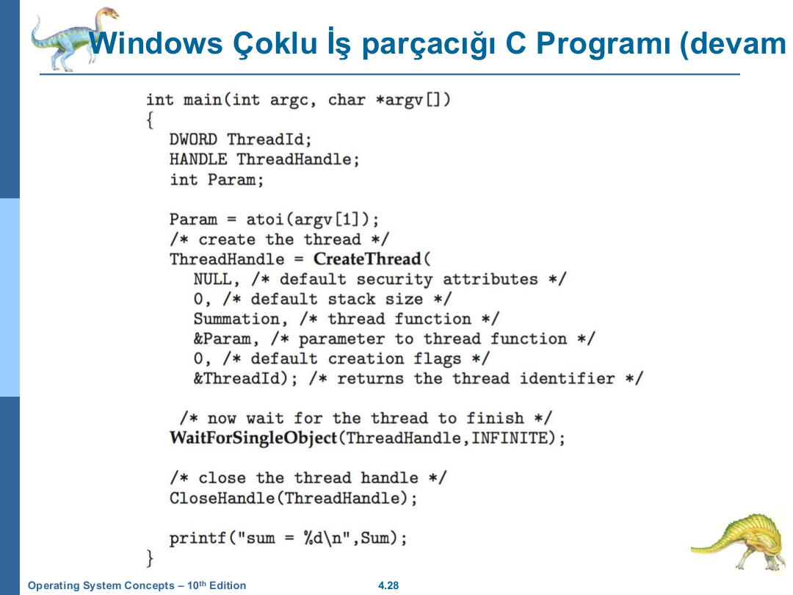
Özgün sunum sayfası • ch4_tr.pdf, PDF s. 28Ders notu
CreateThread çalışan fonksiyonun başlatılmasını ister ve bir handle döndürür. WaitForSingleObject ile tamamlanma beklenir; sonra sonuç okunur ve CloseHandle ile handle kapatılır. Pthreads örneğindeki başlat-bekle-sonucu kullan düzeni burada da vardır. CloseHandle bir thread’i zorla durdurma komutu değildir.
Handle, işletim sistemindeki nesneyle işlem yapmaya yarayan bir başvuru olarak düşünülebilir. WaitForSingleObject tamamlanmayı beklemek için bu başvuruyu kullanır. Sonuç okunduktan sonra CloseHandle çağrısı uygulamanın elindeki başvuruyu bırakır; bu işlem ile hesaplama sonucunun saklandığı değişken farklı şeylerdir. Pthreads ve Windows örneklerini yan yana koyduğunda değişen adların altında benzer bir yaşam döngüsü görürsün: başlat, tamamlanmayı bekle, sonucu kullan, kaynakları bırak.
Kaynak eşleştirmesi: ch4_threading.pdf, Bölüm 4.4.2, PDF s. 14–16; ch4_tr.pdf, PDF s. 28. Eşleştirme konu aralığı düzeyindedir.
SLAYT 29
Java’da iş ve thread ayrımı
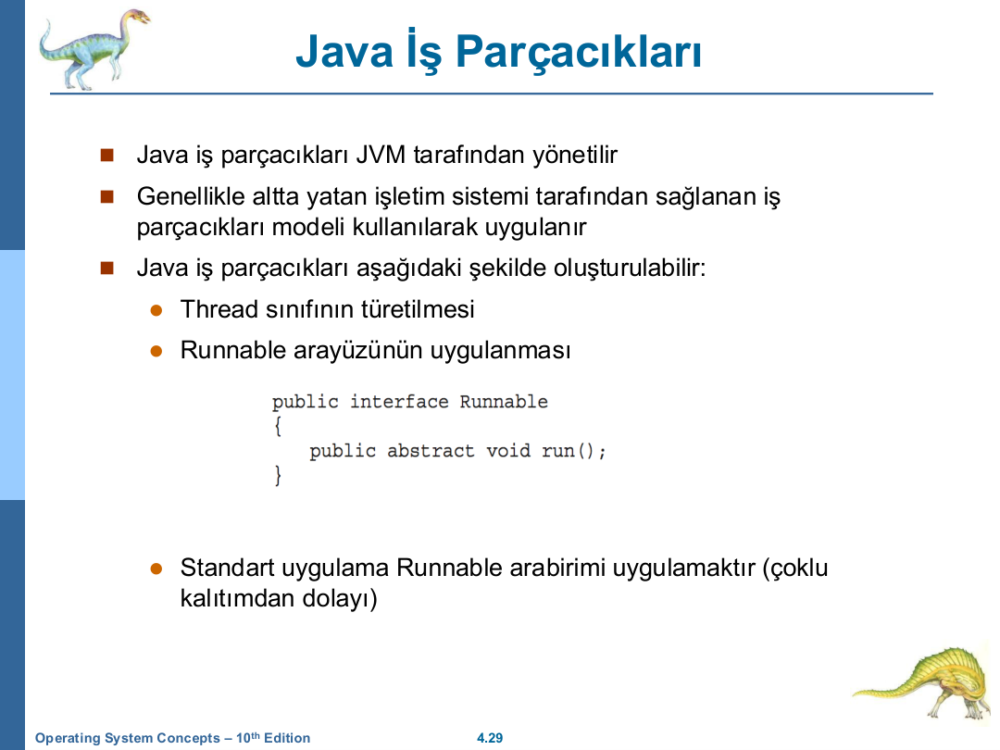
Özgün sunum sayfası • ch4_tr.pdf, PDF s. 29Ders notu
Runnable yapılacak işi run metodu üzerinden tanımlar. Thread bu işi yürütmek için kullanılan nesnedir. Runnable kullanmak iş tanımını Thread sınıfından kalıtıma bağımlı kılmaz. Bu ayrım daha sonra aynı işin bir executor üzerinden çalıştırılmasını anlamayı kolaylaştırır.
Runnable işi tanımladığı için aynı görev fikri daha sonra farklı yürütme mekanizmalarına verilebilir. Thread sınıfını genişletmek ise görev tanımını thread nesnesiyle daha doğrudan birleştirir. Temel düzeyde önemli olan, run metodunun bir “işin gövdesi” olduğudur. Bu gövdenin ayrı thread’de mi yoksa çağıranın akışında mı çalışacağı ise onu nasıl başlattığına bağlıdır; sıradaki slayt bu farkı somutlaştırır.
Kaynak eşleştirmesi: ch4_threading.pdf, Bölüm 4.4.3, PDF s. 16–20; ch4_tr.pdf, PDF s. 29. Eşleştirme konu aralığı düzeyindedir.
SLAYT 30
Java: run, start ve join
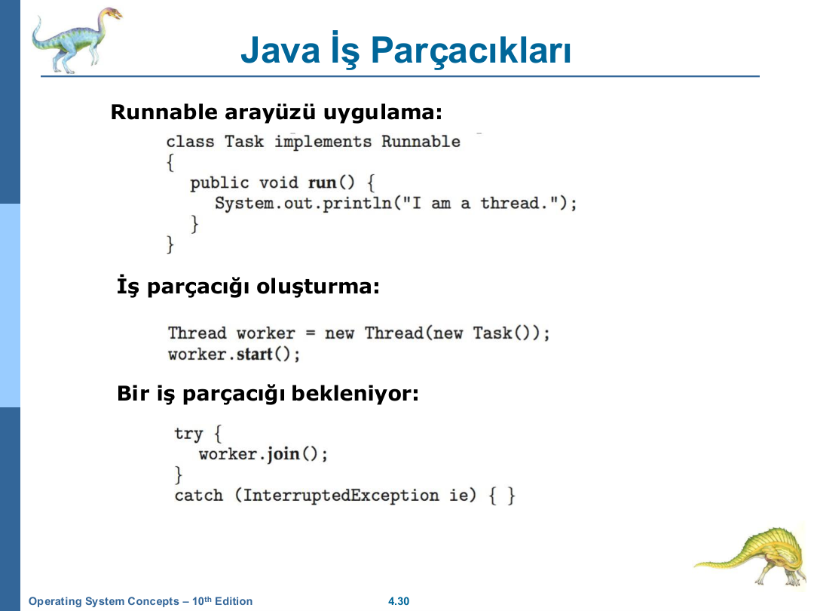
Özgün sunum sayfası • ch4_tr.pdf, PDF s. 30Ders notu
Task implements Runnable sınıfı işi tanımlar; public void run() çalışacak gövdedir. new Thread(new Task()) henüz işi başlatmaz; worker.start() yeni yürütme akışını başlatır. worker.join() çağıran thread’i worker bitene kadar bekletir. run metodunu doğrudan çağırmak ise normal bir metot çağrısıdır. InterruptedException bekleyen thread’in kesilme durumunu ele almak içindir.
worker.start() çağrısından sonra ana akış ile run gövdesi için iki yürütme akışı düşünülür. Hangisinin önce çıktı vereceği konusunda ek bir sıralama yoksa kesin bir sıra varsayılmamalıdır. worker.join() ana thread’e “bu çalışan tamamlanmadan sonraki adıma geçme” der. join içindeki bekleme kesilirse catch bloğuna geçilebilir; bu durum çalışanın başarıyla tamamlandığı sonucuyla karıştırılmamalıdır. Kodun akışını okurken başlatma, çalışma ve bekleme satırlarını ayrı renkle işaretlemek yararlıdır.
Kaynak eşleştirmesi: ch4_threading.pdf, Bölüm 4.4.3, PDF s. 16–20; ch4_tr.pdf, PDF s. 30. Eşleştirme konu aralığı düzeyindedir.
SLAYT 31
Executor yaklaşımı
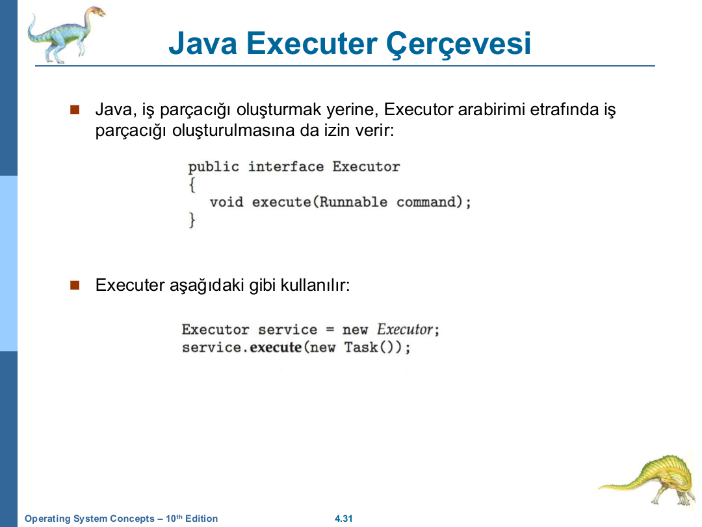
Özgün sunum sayfası • ch4_tr.pdf, PDF s. 31Ders notu
Programcı doğrudan her iş için Thread oluşturmak yerine işi executor’a verir. executor.execute(task) bir Runnable görevi yürütülmek üzere teslim eder. Görevlerin hangi çalışanlarda ne zaman başlayacağı executor politikasına bağlıdır. Böylece yapılacak iş ile yürütme kaynaklarının yönetimi ayrılır.
Bir uygulamanın tekrar tekrar küçük işler ürettiğini düşün. Her iş için thread oluşturma ayrıntısını uygulamanın her yerine dağıtmak yerine, tek bir yürütücüye görev teslim edilebilir. Executor böyle bir sorumluluk ayrımı sağlar. Ancak teslim edilen işin hemen başladığı, belirli bir thread’de çalıştığı veya teslim sırasıyla tamamlandığı yalnızca bu arayüzden çıkarılamaz. Bu davranışlar seçilen yürütücünün politikasıyla birlikte değerlendirilir.
Kaynak eşleştirmesi: ch4_threading.pdf, Bölüm 4.4.3, PDF s. 16–20; ch4_tr.pdf, PDF s. 31. Eşleştirme konu aralığı düzeyindedir.
SLAYT 32
Callable ile sonuç üreten iş
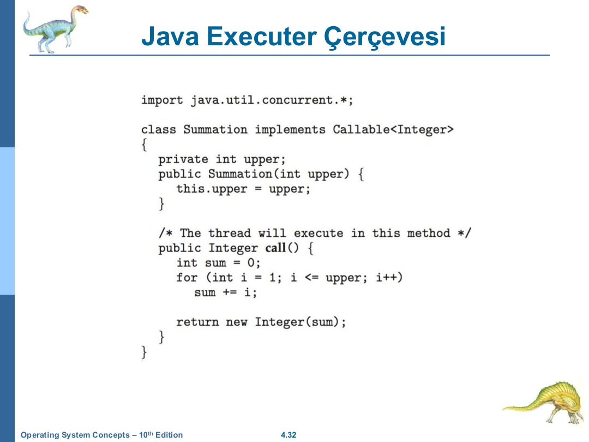
Özgün sunum sayfası • ch4_tr.pdf, PDF s. 32Ders notu
Summation implements Callable<Integer>, görevin bir tamsayı sonuç üreteceğini belirtir. Kurucu üst sınırı nesnede saklar; call metodu toplama yapıp sonucu döndürür. Runnable.run sonuç döndürmezken Callable.call sonuç döndürebilir. Slayttaki new Integer biçimi kaynakta kullanılan sözdizimidir; burada asıl öğrenilecek nokta sonuç sözleşmesidir.
Callable<Integer> içindeki Integer, bu görevin döndüreceği sonucun türünü ifade eder. upper nesnenin verisidir; call içindeki sum ise hesabın yerel birikim değişkenidir. Görev çalıştırıldığında upper’a kadar toplama yapılır ve sonuç return ile dışarı verilir. Böylece ortak bir global sonuç değişkeni kullanmadan da sonuç üretme sözleşmesi kurulabilir. Bu, farklı görevlerin kendi sonuçlarını ayrı ayrı üretmesini kavramsal olarak daha kolay izlemeyi sağlar.
Kaynak eşleştirmesi: ch4_threading.pdf, Bölüm 4.4.3, PDF s. 16–20; ch4_tr.pdf, PDF s. 32. Eşleştirme konu aralığı düzeyindedir.
SLAYT 33
Future ile sonucu almak
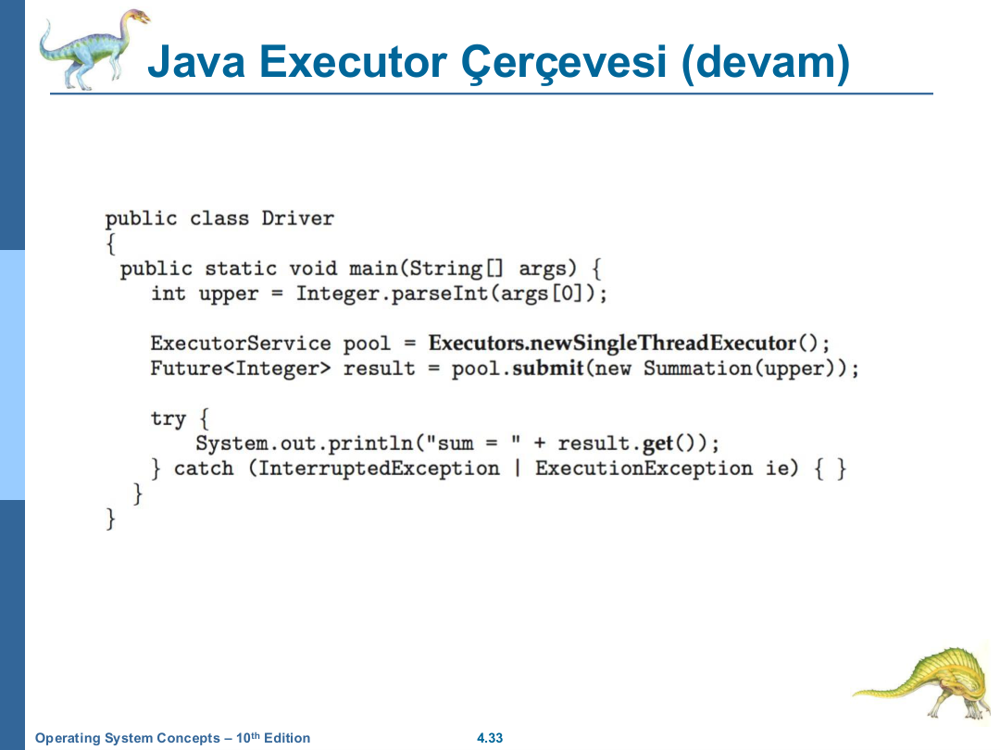
Özgün sunum sayfası • ch4_tr.pdf, PDF s. 33Ders notu
submit bir Future döndürür; bu nesne henüz tamamlanmamış bir sonucu temsil edebilir. get çağrısı sonuç hazır değilse çağıranı bekletir; sonuç hazırsa değeri verir. Hatalı tamamlanma ve kesilme durumları ele alınmalıdır. İşler teslim edildikten sonra executor.shutdown yeni görev kabulünü kapatır; çalışan işleri anında zorla kesmez.
Future nesnesi, restoranda verilen sipariş numarası benzetmesiyle anlaşılabilir: numara yemeğin kendisi değildir, sonucuna daha sonra erişmek için bir başvurudur. get çağrısı bu benzetmede siparişin hazırlanmasını beklemeye benzer. Bununla birlikte gerçek kodda başarısızlık ve kesilme durumları da vardır. Her submit işleminden hemen sonra get çağırmak, sonraki görevleri teslim etmeden beklemeye yol açabilir; görevlerin hangi sırayla teslim edilip beklenildiği paralellik fırsatını etkiler.
Kaynak eşleştirmesi: ch4_threading.pdf, Bölüm 4.4.3, PDF s. 16–20; ch4_tr.pdf, PDF s. 33. Eşleştirme konu aralığı düzeyindedir.
SLAYT 34
Örtük thread yönetimi
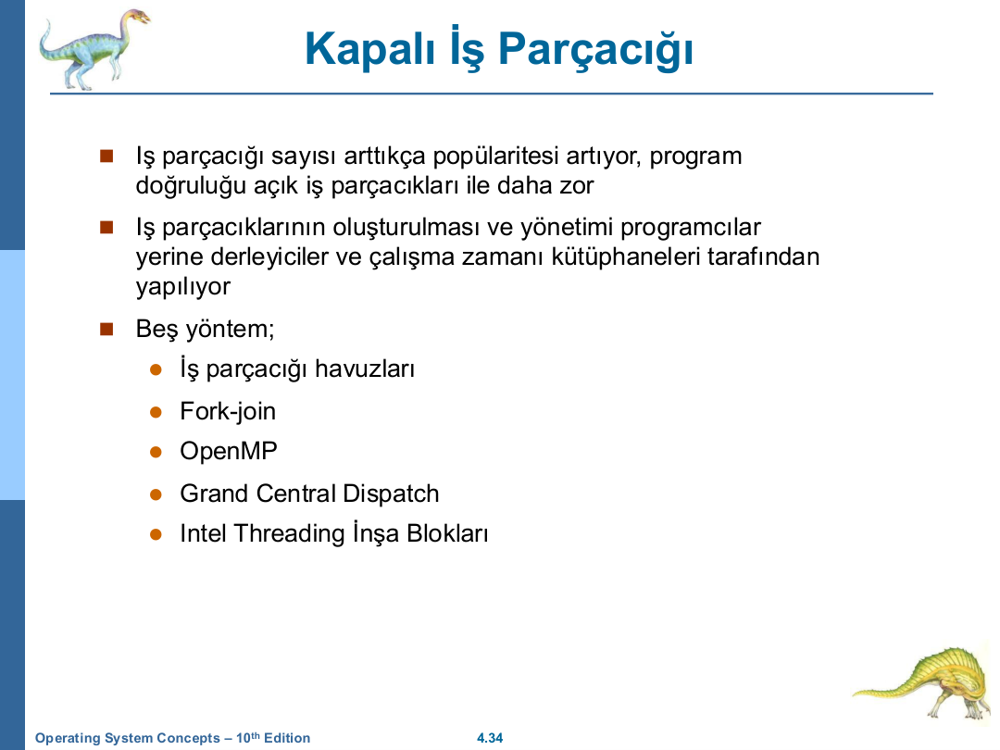
Özgün sunum sayfası • ch4_tr.pdf, PDF s. 34Ders notu
Slayttaki “Kapalı İş Parçacığı” ifadesi implicit threading, yani örtük thread yönetimi olarak anlaşılmalıdır. Programcı görevleri veya paralel bölgeleri tanımlar; derleyici ve çalışma zamanı thread ayrıntılarının bir bölümünü üstlenir. Bu yöntem veri bağımlılıklarını ortadan kaldırmaz; paylaşılan verinin doğruluğu yine düşünülmelidir.
Açık thread yönetiminde programcı çalışanların oluşturulmasını ve beklenmesini doğrudan kodlar. Örtük yönetimde ise “bu aralığı işle” veya “bu görevi kuyruğa koy” gibi daha yüksek düzeyli bir tanım kullanılır. Bu yaklaşım uygulamayı sadeleştirebilir; fakat algoritmanın doğru bölünmüş olması hâlâ gerekir. Örneğin iki görev aynı sonuç hücresine kontrolsüz yazıyorsa yüksek düzeyli bir arayüz seçmek bu çakışmayı kendiliğinden çözmez.
Kaynak eşleştirmesi: ch4_threading.pdf, Bölüm 4.5.1, PDF s. 20–23; ch4_tr.pdf, PDF s. 34. Eşleştirme konu aralığı düzeyindedir.
SLAYT 35
Thread havuzunun mantığı
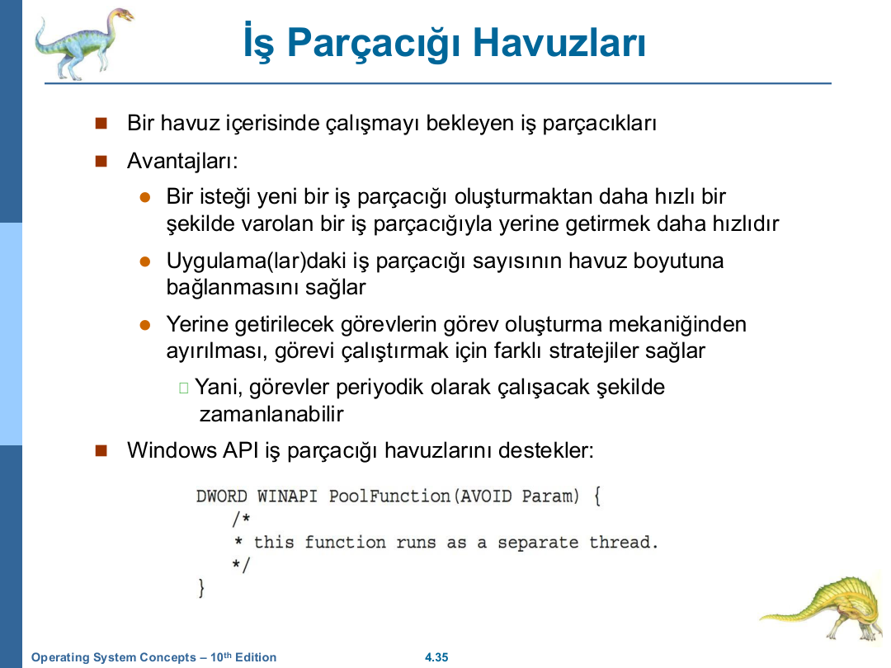
Özgün sunum sayfası • ch4_tr.pdf, PDF s. 35Ders notu
Önceden oluşturulmuş çalışanlar kuyruktan görev alır, tamamlayınca yeni göreve geçer. Çalışanları tekrar kullanmak oluşturma maliyetini azaltabilir ve kaynak kullanımını sınırlayabilir. Sınırlı çalışan sayısı, görev kuyruğunun da otomatik olarak sınırlı olduğu anlamına gelmez. Yoğun istek altında kuyruk ve bekleme süresi ayrıca değerlendirilir.
Dört çalışanlı bir havuza on görev geldiğini düşün. Uygun koşullarda dört görev çalışanlara verilir; diğerleri sırada bekler. Bir çalışan görevini bitirince sıradaki işi alır. Böylece on görev için on ayrı thread oluşturmak gerekmez. Ancak görevler çok uzun sürerse kuyruk büyüyebilir. Bu yüzden havuz boyutu, görev kuyruğu ve kullanıcıların bekleme süresi farklı ölçümlerdir; yalnızca çalışan sayısına bakmak yeterli değildir.
Kaynak eşleştirmesi: ch4_threading.pdf, Bölüm 4.5.1, PDF s. 20–23; ch4_tr.pdf, PDF s. 35. Eşleştirme konu aralığı düzeyindedir.
SLAYT 36
Java havuz politikaları
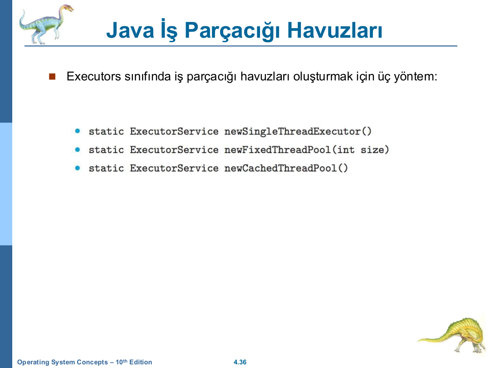
Özgün sunum sayfası • ch4_tr.pdf, PDF s. 36Ders notu
Slayttaki yöntemler farklı yürütme politikalarını temsil eder: tek çalışanlı, sabit sayıda çalışanlı ve ihtiyaca göre çalışan yönetimli havuzlar. Seçim, işin bekleme ağırlığına ve kaynak tüketimine bağlıdır. Sabit havuzda fazla görevlerin beklemesi beklenen davranıştır; her görev hemen çalışmaya başlamaz.
Tek çalışanlı düzen görevleri bir çalışanda yürütür; bu, bazı sıralama gereksinimlerini anlamayı kolaylaştırabilir. Sabit havuz belirlenen sayıda çalışanla kaynak kullanımını kontrol etmeye yardımcı olur. Daha esnek havuz politikaları ise yük değişimine farklı biçimde yanıt verir. Hiçbir seçenek bütün işler için en iyi değildir. Özellikle görevlerin çoğunlukla CPU’da hesaplama mı yaptığı, yoksa dış bir kaynağı mı beklediği değerlendirilmelidir.
Kaynak eşleştirmesi: ch4_threading.pdf, Bölüm 4.5.1, PDF s. 20–23; ch4_tr.pdf, PDF s. 36. Eşleştirme konu aralığı düzeyindedir.
SLAYT 37
Havuza görev teslim etme
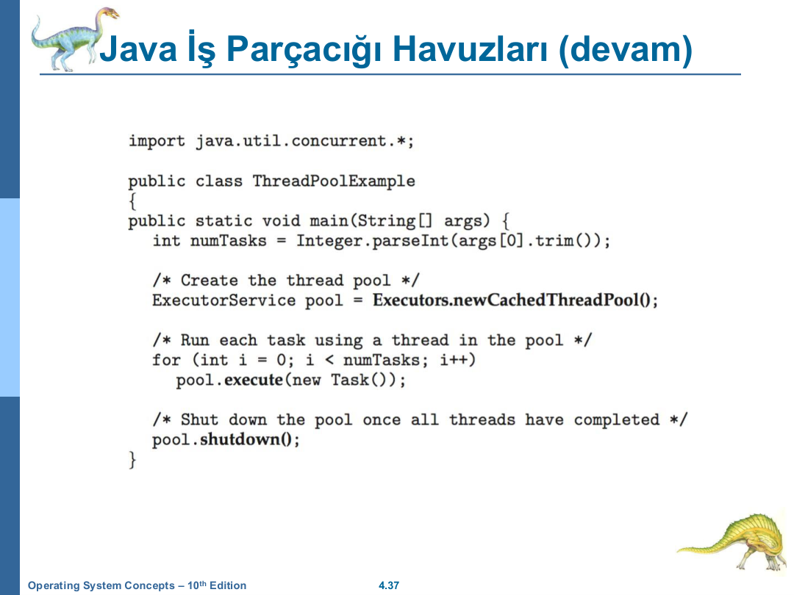
Özgün sunum sayfası • ch4_tr.pdf, PDF s. 37Ders notu
Örnekte görev nesneleri oluşturulur ve havuza teslim edilir. Havuz boyutu aynı anda kullanılabilecek çalışan sayısını belirler; toplam görev sayısını belirlemez. shutdown teslim edilen görevlerin tamamlanmasına izin veren kapanış sürecini başlatır. Sonuçların anında hazır olacağını varsaymak doğru değildir.
Görev teslimi ile tamamlanmayı iki ayrı olay olarak işaretle. Döngünün bütün görevleri executor’a vermiş olması, işlerin bittiği anlamına gelmez. Benzer şekilde shutdown çağrısı sonrasında sırada bulunan veya çalışan işler tamamlanmaya devam edebilir. Uygulamanın kapanmadan önce kesin olarak bütün sonuçlara ihtiyaç duyması durumunda uygun tamamlanma bekleme mekanizması gerekir. Bu sayfa görev yaşam döngüsünü gözle izlemek için kullanılmalıdır.
Kaynak eşleştirmesi: ch4_threading.pdf, Bölüm 4.5.1, PDF s. 20–23; ch4_tr.pdf, PDF s. 37. Eşleştirme konu aralığı düzeyindedir.
SLAYT 38
Fork-join fikri
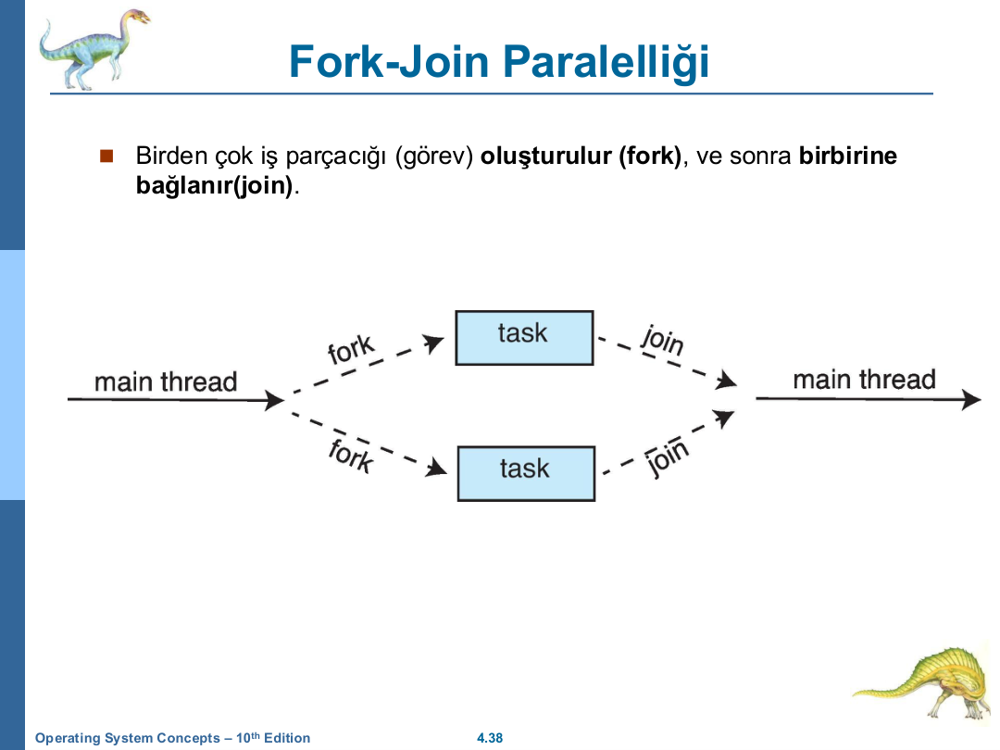
Özgün sunum sayfası • ch4_tr.pdf, PDF s. 38Ders notu
Büyük iş bağımsız alt görevlere ayrılır; alt görevler tamamlandıktan sonra sonuçlar birleştirilir. Buradaki fork sözcüğü bir görevi dallandırmayı anlatır; UNIX fork sistem çağrısıyla aynı işlem olmak zorunda değildir. Örneğin dizinin iki yarısının toplamı ayrı hesaplanıp sonunda toplanabilir.
Örneğin sekiz sayının toplamını iki alt probleme ayır: ilk dört sayının toplamı ve son dört sayının toplamı. Her iki sonuç hazır olduğunda topla. Alt problemler de yeterince büyükse yeniden bölünebilir. Ancak her bölme yeni görev oluşturma ve sonuç bekleme maliyeti doğurur. Bu nedenle fork-join yalnızca bir ağaç çizmek değil, hangi büyüklüğe kadar bölmenin yararlı olduğuna karar vermektir.
Kaynak eşleştirmesi: ch4_threading.pdf, Bölüm 4.5.2, PDF s. 23–27; ch4_tr.pdf, PDF s. 38. Eşleştirme konu aralığı düzeyindedir.
SLAYT 39
Algoritmanın adımları
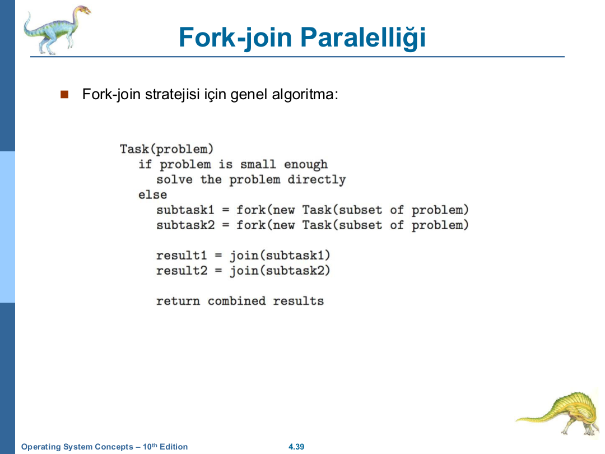
Özgün sunum sayfası • ch4_tr.pdf, PDF s. 39Ders notu
Önce problem yeterince küçük mü diye bakılır. Küçükse doğrudan çözülür; büyükse alt problemlere bölünür, işler yürütülür ve sonuçlar birleştirilir. Durdurma eşiği önemlidir: her küçük işlem için görev oluşturmak yönetim maliyetini artırabilir.
Doğrudan çözülen küçük problem, algoritmanın taban durumudur. Taban durum olmazsa bölme işlemi gereksiz yere sürer veya sonlanma bozulur. Birleştirme aşaması da problemin türüne bağlıdır: toplamda iki sayı eklenirken sıralamada iki sıralı alt listenin birleştirilmesi gerekebilir. Dolayısıyla fork-join genel bir iş örgütleme kalıbıdır; her problem için aynı birleştirme kodu kullanılmaz.
Kaynak eşleştirmesi: ch4_threading.pdf, Bölüm 4.5.2, PDF s. 23–27; ch4_tr.pdf, PDF s. 39. Eşleştirme konu aralığı düzeyindedir.
SLAYT 40
Şekli okuyalım: görev ağacı
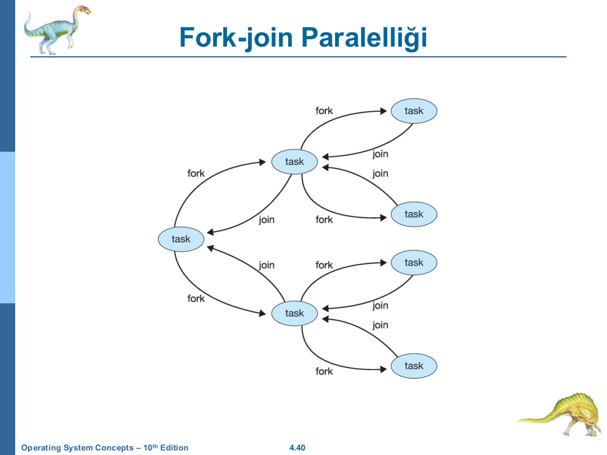
Özgün sunum sayfası • ch4_tr.pdf, PDF s. 40Ders notu
Dallar işin parçalara ayrılmasını, birleşme noktaları sonuçların beklenip birleştirilmesini gösterir. Çocuk görevin sonucu hazır olmadan ona bağlı üst sonuç tamamlanamaz. Görev ağacındaki düğüm sayısı ile fiziksel thread sayısı aynı olmak zorunda değildir; havuz çalışanları çok sayıda görevi paylaşabilir.
Ağaçta üst düğümün tamamlanması bazı alt düğümlerin bitmesine bağlıdır. Bu nedenle bütün düğümler bağımsız ve aynı anda çalışabilir değildir. Öte yandan aynı seviyedeki bağımsız alt problemler paralellik fırsatı sunabilir. İş yükü dengesiz bölünürse bir dal diğerinden daha geç tamamlanır ve birleşme noktasında bekleme oluşur. Şekli yalnızca görev sayısı açısından değil, bağımlılık ve yük dengesi açısından da okumak gerekir.
Kaynak eşleştirmesi: ch4_threading.pdf, Bölüm 4.5.2, PDF s. 23–27; ch4_tr.pdf, PDF s. 40. Eşleştirme konu aralığı düzeyindedir.
SLAYT 41
Java fork-join başlangıcı
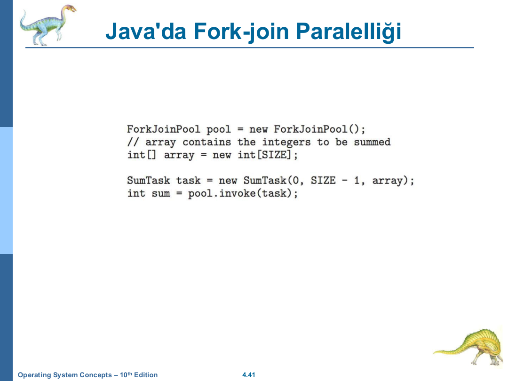
Özgün sunum sayfası • ch4_tr.pdf, PDF s. 41Ders notu
ForkJoinPool görevleri yürüten havuzdur. Dizi ve aralık bilgisi SumTask nesnesine verilir; pool.invoke(task) görevin sonucunu bekleyerek döndürür. SIZE-1 son geçerli indeks olarak kullanılan bir sınırdır. Burada veri, görev nesnesi ve yürütücü havuzun rollerini ayırmak kodu okumayı kolaylaştırır.
SumTask oluşturulurken verilen başlangıç ve bitiş değerleri hangi veri aralığının işleneceğini belirtir. Böylece aynı görev sınıfı farklı alt aralıklar için kullanılabilir. pool.invoke çağrısı üst görevin sonucunu almak için başlangıç noktasıdır; alt görevlerin nasıl bölüneceğini compute belirler. İlk okuma sırasında havuzun iç zamanlamasına girmek yerine veri aralığının görev nesnesinden compute metoduna nasıl taşındığını izlemek yeterlidir.
Kaynak eşleştirmesi: ch4_threading.pdf, Bölüm 4.5.2, PDF s. 23–27; ch4_tr.pdf, PDF s. 41. Eşleştirme konu aralığı düzeyindedir.
SLAYT 42
Java fork-join: böl ve birleştir
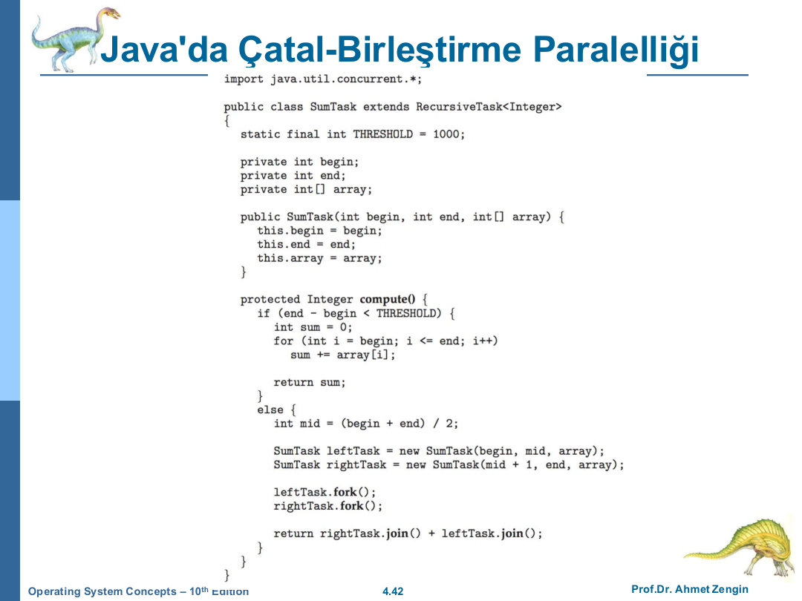
Özgün sunum sayfası • ch4_tr.pdf, PDF s. 42Ders notu
compute metodu aralık küçükse doğrudan toplar. Büyükse orta noktayı bulur; sol ve sağ aralık için alt görevler oluşturur. fork görevleri yürütülmek üzere planlar; join sonuçları bekleyip döndürür. Son satır iki alt toplamı birleştirir. Eşik değeri küçük işler için gereksiz görev maliyetini önlemeye çalışır; int toplamının büyük veride taşabileceği ayrıca düşünülmelidir.
Aralık sınırları hata yapmaya açıktır. Slayttaki örnekte son indeksin dahil olduğu döngü ile sağ alt aralığın orta+1’den başlaması birlikte okunmalıdır; aksi hâlde orta eleman iki kez sayılabilir veya atlanabilir. Küçük aralıkta doğrudan döngü kullanmak görev maliyetini azaltmayı amaçlar. Bu sayfadaki temel okuma sırası şudur: sınırları anla, eşik koşulunu bul, iki alt aralığı izle, sonuçların nerede toplandığını belirle.
Kaynak eşleştirmesi: ch4_threading.pdf, Bölüm 4.5.2, PDF s. 23–27; ch4_tr.pdf, PDF s. 42. Eşleştirme konu aralığı düzeyindedir.
SLAYT 43
Sonuç üreten ve üretmeyen görevler
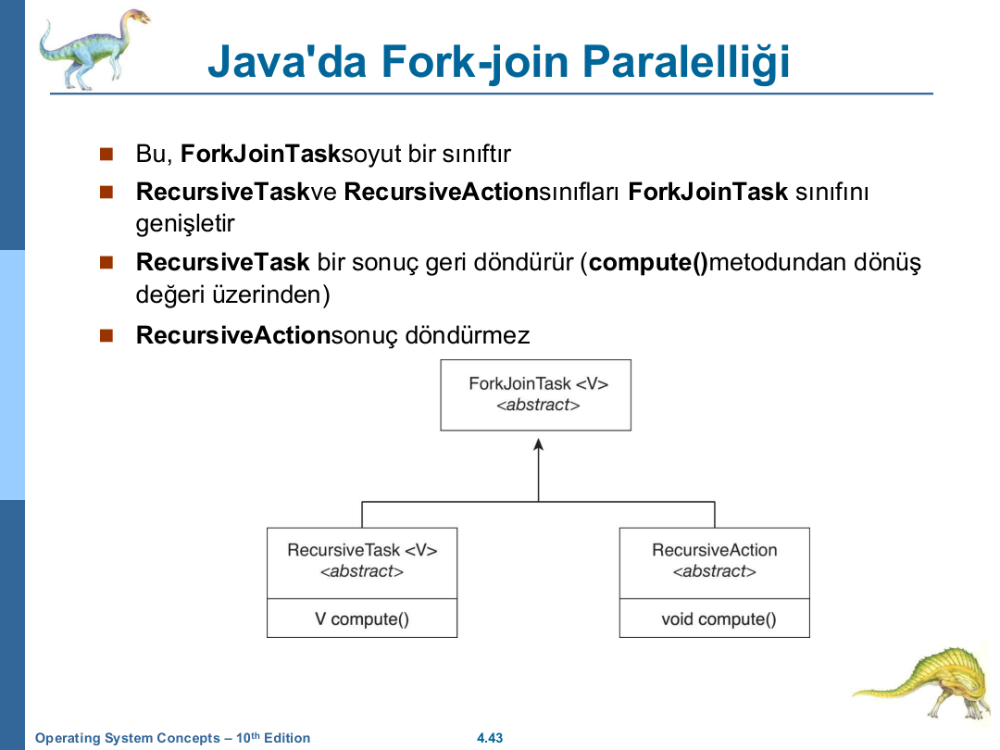
Özgün sunum sayfası • ch4_tr.pdf, PDF s. 43Ders notu
RecursiveTask<V> sonuç döndüren, RecursiveAction sonuç döndürmeyen görev soyutlamasıdır. compute metodunun dönüş sözleşmesi buna göre değişir. Örneğin toplam hesaplamak bir değer üretir; bir diziyi yerinde dönüştürmek ayrı bir dönüş değerine ihtiyaç duymayabilir.
V tür parametresi sonucun türünü temsil eder. Örneğin Integer döndüren bir toplam görevi ile başka bir sonuç türü döndüren görev aynı genel soyutlamayı kullanabilir. RecursiveAction ise görevin etkisinin veriyi yerinde değiştirmek gibi bir işlem olduğu durumları temsil eder. Bu ayrım görevin yan etkisiz veya otomatik güvenli olduğu anlamına gelmez; yalnızca sonuç değerinin arayüzde nasıl ifade edildiğini açıklar.
Kaynak eşleştirmesi: ch4_threading.pdf, Bölüm 4.5.2, PDF s. 23–27; ch4_tr.pdf, PDF s. 43. Eşleştirme konu aralığı düzeyindedir.
SLAYT 44
OpenMP: paralel bölge
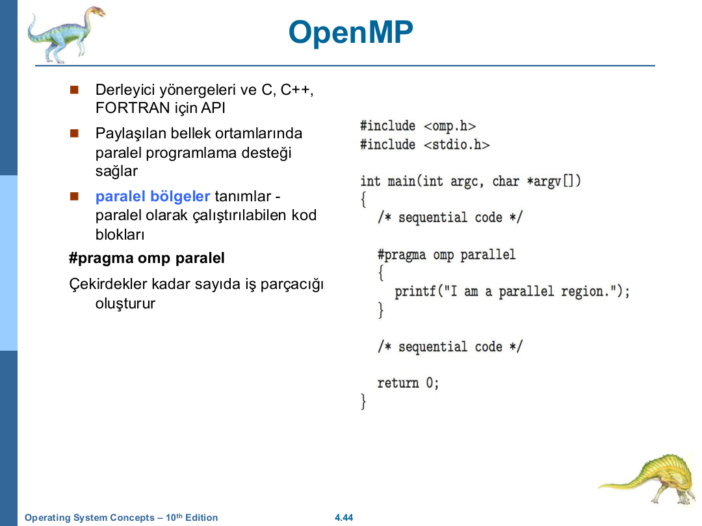
Özgün sunum sayfası • ch4_tr.pdf, PDF s. 44Ders notu
Derleyici yönergesiyle belirli bir kod bölgesinin bir thread ekibi tarafından yürütülmesi istenir. Programın tamamı otomatik olarak paralelleşmez. Bölge içindeki hangi verilerin ortak veya thread’e özel olacağı önemlidir. Yönerge eklemek, aynı değişkene çakışan yazmaları tek başına güvenli hale getirmez.
Bir paralel bölgeye girildiğinde bölgedeki kodun birden fazla çalışan tarafından yürütülmesi söz konusu olabilir. Bu yüzden bölge içine eklenen bir yazdırma işlemi birden fazla kez çıktı üretebilir. Önce “hangi satır kaç çalışan tarafından çalışacak?” sorusunu yanıtlamak gerekir. Ardından paylaşılan veri ve yerel durum ayrılır. Bu okuma alışkanlığı, yönergenin yalnızca performans etiketi olmadığını anlamayı sağlar.
Kaynak eşleştirmesi: ch4_threading.pdf, Bölüm 4.5.3, PDF s. 27–28; ch4_tr.pdf, PDF s. 44. Eşleştirme konu aralığı düzeyindedir.
SLAYT 45
OpenMP: döngüyü bölüştürmek
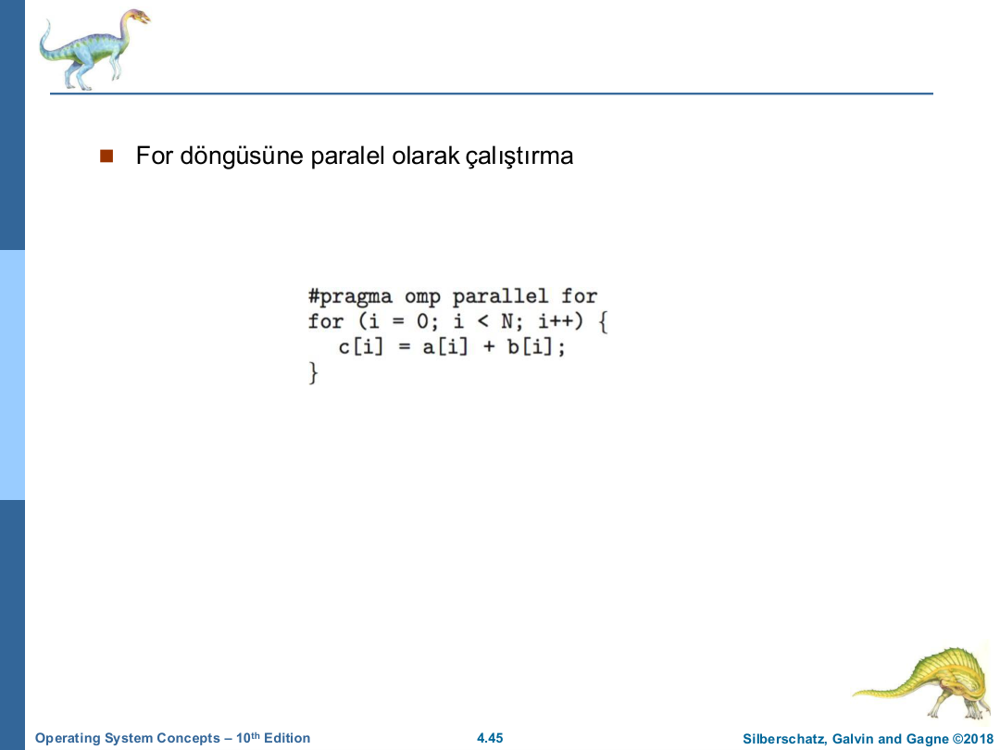
Özgün sunum sayfası • ch4_tr.pdf, PDF s. 45Ders notu
parallel for döngü yinelemelerini çalışanlar arasında dağıtabilir. c[i]=a[i]+b[i] gibi bağımsız indekslerdeki işlemler uygun bir örnektir. Buna karşılık bir yineleme öncekinin sonucunu kullanıyorsa doğrudan dağıtım doğru olmayabilir. Önce veri bağımlılığını incelemek gerekir.
Dizi toplama örneğinde i=0 için yazılan c[0], i=1 için yazılan c[1]’den farklıdır; bu bağımsızlık dağıtımı kolaylaştırır. Buna karşılık a[i]=a[i-1]+1 ifadesi önceki elemanın yeni değerine ihtiyaç duyuyorsa yinelemeler arası bağımlılık vardır. Aynı şekilde bütün yinelemelerin tek bir toplam değişkenine yazması koordinasyon gerektirir. Döngünün görünüşte basit olması paralelleştirmenin doğru olduğunu kanıtlamaz.
Kaynak eşleştirmesi: ch4_threading.pdf, Bölüm 4.5.3, PDF s. 27–28; ch4_tr.pdf, PDF s. 45. Eşleştirme konu aralığı düzeyindedir.
SLAYT 46
Grand Central Dispatch fikri
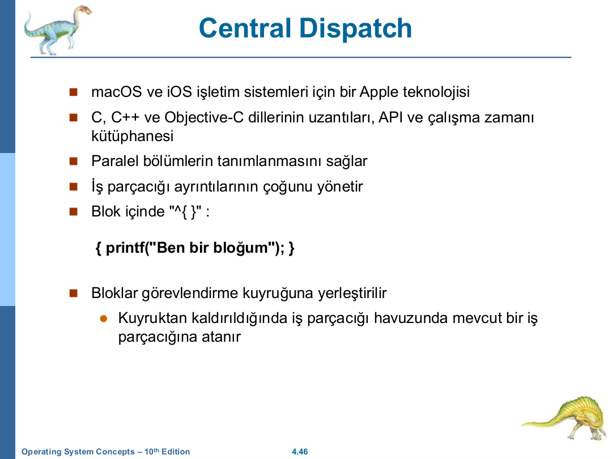
Özgün sunum sayfası • ch4_tr.pdf, PDF s. 46Ders notu
GCD’de geliştirici işleri kuyruklara teslim eder; çalışma zamanı yürütme kaynaklarını yönetir. İş tanımı ile thread oluşturma ayrılır. Kaynak, Apple ekosistemindeki yaklaşımı döneminin API gösterimleriyle anlatır; buradaki hedef kuyruk temelli görev yönetimi fikridir.
Kuyruğa verilen görev, yapılacak işi tanımlar; görevin hangi thread’de yürütüleceğinin ayrıntısını çalışma zamanı yönetebilir. Programcı açısından bu, kaynak yönetiminden çok iş akışını tarif etmeyi öne çıkarır. Örneğin uzun işin tamamlanmasının ardından başka bir işin yürütülmesi tasarlanabilir. Ancak bağımlılıkların ve kullanıcı arayüzüyle ilgili kuralların göz ardı edilmesi güvenli değildir; soyutlama sorumluluğu azaltır, bütünüyle ortadan kaldırmaz.
Kaynak eşleştirmesi: ch4_threading.pdf, Bölüm 4.5.4, PDF s. 28–30; ch4_tr.pdf, PDF s. 46. Eşleştirme konu aralığı düzeyindedir.
SLAYT 47
Seri ve eşzamanlı kuyruklar
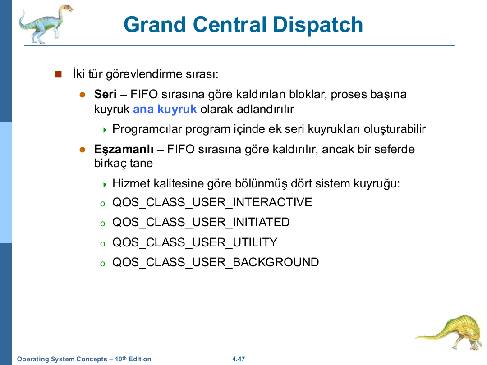
Özgün sunum sayfası • ch4_tr.pdf, PDF s. 47Ders notu
Seri kuyruk kendi görevlerini birer birer yürütür; eşzamanlı kuyruk birden fazla görevin ilerlemesine izin verebilir. Görevlerin teslim sırası ile bitiş sırası özellikle eşzamanlı yürütmede aynı olmayabilir. Kuyruk türü, görevlerin aynı veriye erişirken güvenli olup olmadığını tek başına belirlemez.
Seri bir kuyruk kendi görevleri arasında tek tek yürütme sağlar; uygulamadaki başka kuyrukların da durduğu anlamına gelmez. Eşzamanlı kuyrukta ise birden fazla görev ilerleyebildiğinden kısa bir görev kendisinden önce teslim edilen uzun bir görevden erken bitebilir. Bu ayrım, ortak verinin yalnızca tek bir seri kuyruğa mı ait olduğunu yoksa başka yerlerden de erişilip erişilmediğini düşünmeyi gerektirir.
Kaynak eşleştirmesi: ch4_threading.pdf, Bölüm 4.5.4, PDF s. 28–30; ch4_tr.pdf, PDF s. 47. Eşleştirme konu aralığı düzeyindedir.
SLAYT 48
Closure ile iş tanımı
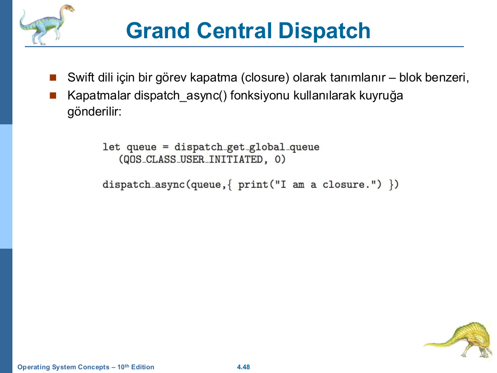
Özgün sunum sayfası • ch4_tr.pdf, PDF s. 48Ders notu
Closure yürütülecek kodu bir değer gibi teslim etmeyi sağlar; çevresindeki bazı değişkenlere erişebilir. Kuyruğa teslim etmek, kodun o satırda tamamlandığı anlamına gelmez. Paylaşılan ve değişebilen değerlerin daha sonra hangi durumda olacağını düşünmek gerekir. Slayttaki çağrı adları tarihsel kaynak gösterimidir.
Bir closure dışarıdaki bir değişkeni kullandığında o değişkenin neyi temsil ettiği ve ne zaman okunacağı önem kazanır. Görev daha sonra çalışacaksa teslim anı ile yürütme anı arasında uygulamanın durumu değişmiş olabilir. Bu nedenle asenkron kodu okurken yalnızca satır sırasını değil, görevin gerçekte ne zaman yürütüldüğünü de düşünmelisin. Slayttaki kısa örnek bu görev teslim etme fikrini göstermek için okunmalıdır.
Kaynak eşleştirmesi: ch4_threading.pdf, Bölüm 4.5.4, PDF s. 28–30; ch4_tr.pdf, PDF s. 48. Eşleştirme konu aralığı düzeyindedir.
SLAYT 49
TBB’de yüksek düzeyli paralellik
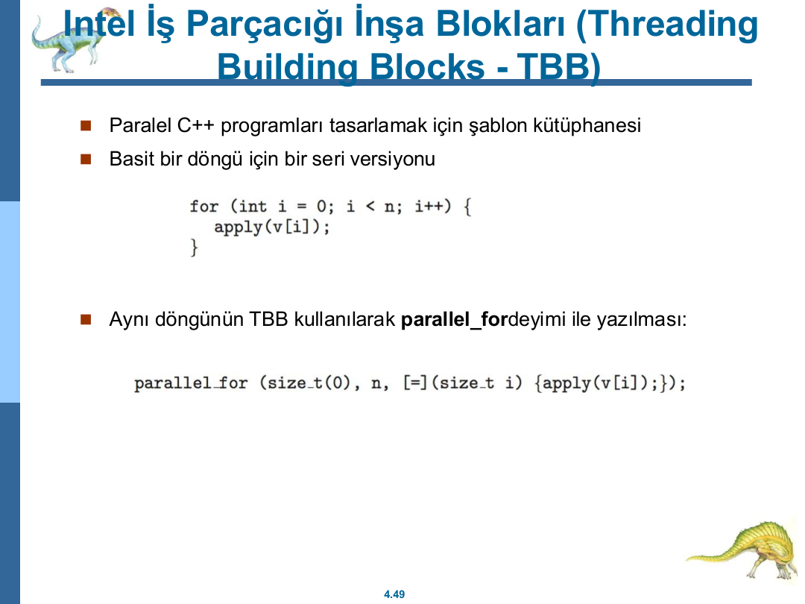
Özgün sunum sayfası • ch4_tr.pdf, PDF s. 49Ders notu
Seri döngü yerine paralel algoritma soyutlaması kullanılır. Çalışma zamanı veri aralığını görevlere bölüp thread’lerde yürütme ayrıntılarını yönetir. Programcının görevi yine bağımsız işlemleri tanımlamak ve çakışan erişimleri önlemektir. Bu slayt bir ürün kurulum rehberinden çok soyutlama düzeylerinin karşılaştırılmasıdır.
Düşük düzeyde “şu kadar thread oluştur” demek yerine “bu aralığa şu işlemi uygula” denir. Bu daha yüksek düzeyli tarif, çalışma zamanına işi parçalara ayırma ve çalışanlara dağıtma alanı bırakır. Ancak her elemanın işlenme maliyeti farklıysa yük dengeleme hâlâ önemlidir. Bu slaytı OpenMP ve GCD ile karşılaştırırken ortak soruyu sor: geliştirici işi hangi soyutlamayla ifade ediyor?
Kaynak eşleştirmesi: ch4_threading.pdf, Bölüm 4.5.5, PDF s. 30–31; ch4_tr.pdf, PDF s. 49. Eşleştirme konu aralığı düzeyindedir.
SLAYT 50
Thread kullanmanın yeni soruları
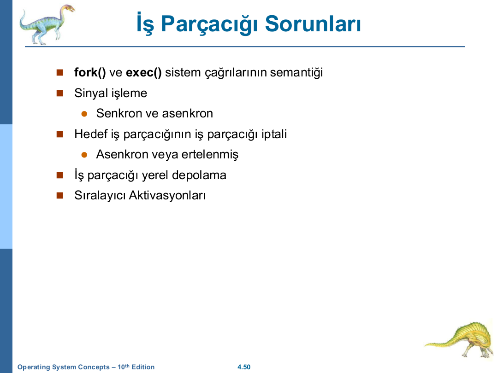
Özgün sunum sayfası • ch4_tr.pdf, PDF s. 50Ders notu
Birden fazla yürütme akışı olduğunda proses kopyalama, sinyal teslimi, iptal ve thread’e özgü veri ayrı sorunlar doğurur. Bu bölüm, önceki faydaların yanında yaşam döngüsü ve doğruluk sorumluluklarını gösterir. Her API’yi ayrıntılı uygulamak yerine hangi sorunu çözdüğünü ayırt etmek ilk hedeftir.
Kaynak eşleştirmesi: ch4_threading.pdf, Bölüm 4.6, PDF s. 31–37; ch4_tr.pdf, PDF s. 50. Eşleştirme konu aralığı düzeyindedir.
SLAYT 51
fork ve exec bağlamı
Özgün sunum sayfası • ch4_tr.pdf, PDF s. 51Ders notu
Çok thread’li bir proseste kopyalanacak yürütme durumunun kapsamı önemlidir. Kaynak farklı tarihsel UNIX davranışlarını tartışır. exec yeni bir program görüntüsüyle mevcut proses görüntüsünü değiştirir; yalnızca çağıran thread’e küçük bir iş eklemek değildir. Belirli bir sistemde uygulama yazarken o sistemin sözleşmesi ayrıca doğrulanmalıdır.
Bir prosesin belleğini kopyalamak ile bütün yürütme akışlarını anlamlı biçimde sürdürmek aynı problem değildir. Thread’lerin tuttuğu kilitler veya devam eden işlemler, kopyalama sonrasındaki durumu karmaşıklaştırabilir. Bu nedenle çok thread’li ortamda proses oluşturma davranışının açık kuralları olmalıdır. Bu slaytta sistemler arası ayrıntıları ezberlemek yerine, neden tek thread’li örnekte görünmeyen ek sorular doğduğunu anlamak hedeflenir.
Kaynak eşleştirmesi: ch4_threading.pdf, Bölüm 4.6, PDF s. 31–37; ch4_tr.pdf, PDF s. 51. Eşleştirme konu aralığı düzeyindedir.
SLAYT 52
Sinyal kavramı
Özgün sunum sayfası • ch4_tr.pdf, PDF s. 52Ders notu
Sinyal, bir olayın proses veya thread bağlamına bildirilmesidir. Senkron sinyal yürütülen işlemden doğabilir; geçersiz bellek erişimi buna örnektir. Asenkron sinyal yürütülen komuttan bağımsız bir olaydan gelebilir. Sinyal işleyicisi, normal kod akışından farklı koşullarda çağrılabileceği için sıradan fonksiyon gibi düşünülmemelidir.
Senkron sözcüğü burada olayın yürütülen işlemle ilişkisini anlatır; gündelik “aynı anda çalışma” anlamıyla karıştırılmamalıdır. Örneğin hatalı bir komutun yol açtığı olay belirli yürütme bağlamına bağlıdır. Dışarıdan gelen bir bildirimde ise hangi thread’in bunu ele alacağı ayrıca belirlenebilir. Bu ayrım, sinyalin sebebi ile teslim politikasının neden birlikte düşünülmesi gerektiğini açıklar.
Kaynak eşleştirmesi: ch4_threading.pdf, Bölüm 4.6, PDF s. 31–37; ch4_tr.pdf, PDF s. 52. Eşleştirme konu aralığı düzeyindedir.
SLAYT 53
Sinyal hangi thread’e gider?
Özgün sunum sayfası • ch4_tr.pdf, PDF s. 53Ders notu
Çok thread’li ortamda sinyalin nedeni ve hedefi önem kazanır. Thread’e yönelik olay ile prosesin tamamına yönelik bildirim aynı teslim kuralına sahip olmak zorunda değildir. Slayttaki seçenekleri bütün sistemlerde serbestçe seçilen eşdeğer politikalar gibi okumamak gerekir; gerçek davranışı sistemin sinyal sözleşmesi belirler.
Bir hata belirli thread’in yürüttüğü komuttan doğduysa bu bağlam önemlidir. Proses düzeyinde gönderilen bir bildirimde ise sinyalin maskelenmesi ve uygun alıcı gibi kurallar devreye girebilir. Slayttaki listeyi “her sinyal her thread’e gönderilebilir” diye genellememek gerekir. Konunun ana mesajı, çoklu yürütme akışının olay tesliminde yeni bir hedef belirleme sorunu oluşturmasıdır.
Kaynak eşleştirmesi: ch4_threading.pdf, Bölüm 4.6, PDF s. 31–37; ch4_tr.pdf, PDF s. 53. Eşleştirme konu aralığı düzeyindedir.
SLAYT 54
İptal: hemen mi, güvenli noktada mı?
Özgün sunum sayfası • ch4_tr.pdf, PDF s. 54Ders notu
Asenkron iptal hedefi uygun olmayan bir anda durdurabilir; kilit veya kaynaklar tutarsız kalabilir. Ertelenmiş iptalde thread belirli noktalarda isteğe yanıt verir. Burada iptal talebi ile fiili sonlanma ayrılmalıdır. Kaynak temizliği iptal tasarımının bir parçasıdır.
Bir thread’in dosyaya yazarken durdurulduğunu düşün. İşin yalnızca bir kısmı tamamlanmış olabilir; açık kaynakların bırakılması veya tutarlılığın korunması gerekebilir. Ertelenmiş iptal, programın uygun noktalarda kapanışa hazırlanmasına olanak sağlayabilir. Ancak bu noktaların ve temizleme işlemlerinin doğru tasarlanması gerekir. “İptal edilebilirlik” bir API çağrısının yanında kaynak sahipliğini de ilgilendiren bir program tasarımı konusudur.
Kaynak eşleştirmesi: ch4_threading.pdf, Bölüm 4.6, PDF s. 31–37; ch4_tr.pdf, PDF s. 54. Eşleştirme konu aralığı düzeyindedir.
SLAYT 55
Pthreads iptal durumu
Özgün sunum sayfası • ch4_tr.pdf, PDF s. 55Ders notu
İptal isteğinin işlenmesi etkinlik durumuna ve iptal türüne bağlıdır. Devre dışı bırakılan bir thread’e istek gönderilmesi hemen sonlanma anlamına gelmez. Ertelenmiş iptalde iptal noktası önemlidir; pthread_testcancel açık bir kontrol noktası sağlar. Temizleme işlemleri edinilen kaynakların bırakılmasına yardımcı olur.
İptal durumunu bir kapı, iptal türünü ise isteğin hangi koşulda işleneceğini belirleyen kural gibi düşünebilirsin. Kapı kapalıyken bir talep gelmesi hemen sonlanma oluşturmaz. Ertelenmiş türde ise uygun iptal noktası beklenir. Bu iki ayar farklı sorulara yanıt verir. Slayttaki tabloda etkinlik durumu ile türü ayrı sütunlar olarak okumak, iptal isteğini koşulsuz durdurma komutu sanmayı önler.
Kaynak eşleştirmesi: ch4_threading.pdf, Bölüm 4.6, PDF s. 31–37; ch4_tr.pdf, PDF s. 55. Eşleştirme konu aralığı düzeyindedir.
SLAYT 56
Java interrupt ne yapar?
Özgün sunum sayfası • ch4_tr.pdf, PDF s. 56Ders notu
interrupt bir thread’i koşulsuz olarak öldürmez; kesilme isteğini bildirir. Thread durumunu kontrol ederek veya kesilebilir bir beklemeden InterruptedException alarak bu isteğe yanıt verebilir. Uygulamanın uygun kapanış davranışını yazması gerekir. Bu nedenle iptal, yalnızca dışarıdan tek bir komut göndermek değildir.
Uzun bir hesaplama kesilme durumunu hiç kontrol etmiyorsa yalnızca interrupt çağrısı istenen kapanışı sağlamayabilir. Bekleme yapan kodda InterruptedException alınması ise kontrol akışını başka bir yola taşır. Uygulama bu durumda işi bırakacak mı, kaynakları temizleyecek mi, isteği üst katmana mı aktaracak sorularını yanıtlamalıdır. Bu örnek, işbirlikli sonlanmanın hem isteyen hem çalışan tarafında davranış gerektirdiğini gösterir.
Kaynak eşleştirmesi: ch4_threading.pdf, Bölüm 4.6, PDF s. 31–37; ch4_tr.pdf, PDF s. 56. Eşleştirme konu aralığı düzeyindedir.
SLAYT 57
Thread-local storage
Özgün sunum sayfası • ch4_tr.pdf, PDF s. 57Ders notu
TLS her thread için ayrı bir veri örneği sağlar. Ortak bir değişkenin bütün thread’lerce paylaşılmasından farklıdır. Yerel değişkenin ömrü fonksiyon çağrısına bağlıyken TLS verisi farklı çağrılarda aynı thread bağlamında kullanılabilir. Havuzda thread yeniden kullanıldığı için göreve ait verinin temizliği ayrıca düşünülmelidir.
Örneğin her çalışan kendi ara hesaplama bilgisini TLS içinde tutabilir. Böylece aynı anahtarın farklı thread’lerde farklı değerleri olabilir. Ancak havuzdaki aynı thread daha sonra başka bir görevi çalıştırır; bu yüzden önceki göreve ait bilgi temizlenmediyse yeni görev açısından beklenmeyen durum oluşabilir. Burada “thread’e ait” ile “göreve ait” ayrımı önemlidir. TLS her türlü ortak veri paylaşımının yerine geçen bir çözüm değildir.
Kaynak eşleştirmesi: ch4_threading.pdf, Bölüm 4.6, PDF s. 31–37; ch4_tr.pdf, PDF s. 57. Eşleştirme konu aralığı düzeyindedir.
SLAYT 58
Scheduler activations
Özgün sunum sayfası • ch4_tr.pdf, PDF s. 58Ders notu
Kaynak, kullanıcı düzeyindeki zamanlayıcı ile çekirdek arasındaki koordinasyonu anlatır. Çekirdekten gelen upcall bildirimleri, bloklanma gibi olaylara tepki verilmesine yardım eder. Bu kavram çoktan çoğa ve iki düzeyli modelleri tamamlar; her işletim sisteminde kullanılan tek standart yöntem olarak düşünülmemelidir.
Kullanıcı alanındaki zamanlayıcı hangi işin çalışacağını seçerken, çekirdek alttaki yürütme kaynaklarını yönetir. Bu iki tarafın birbirinin durumundan haberdar olması gerekebilir. Örneğin alttaki bir yürütme biriminin bloklanması kullanıcı düzeyinde başka bir işin seçilmesini gerektirebilir. Scheduler activations bu işbirliği problemini anlamak için sunulur; ayrıntılı mekanizma ileri konu olarak bırakılabilir.
Kaynak eşleştirmesi: ch4_threading.pdf, Bölüm 4.6, PDF s. 31–37; ch4_tr.pdf, PDF s. 58. Eşleştirme konu aralığı düzeyindedir.
SLAYT 59
İşletim sistemi örneklerine geçiş
Özgün sunum sayfası • ch4_tr.pdf, PDF s. 59Ders notu
Şimdiye kadar thread’i kavramsal ve API düzeyinde ele aldık. Windows ve Linux örnekleri aynı yürütme fikrinin farklı iç veri yapılarıyla temsil edildiğini gösterir. Öğrenilecek temel ilişki, uygulamanın gördüğü thread ile çekirdeğin zamanladığı durum arasındaki bağlantıdır.
Kaynak eşleştirmesi: ch4_threading.pdf, Bölüm 4.7 ve bölüm özeti, PDF s. 37–40; ch4_tr.pdf, PDF s. 59. Eşleştirme konu aralığı düzeyindedir.
SLAYT 60
Windows thread durumu
Özgün sunum sayfası • ch4_tr.pdf, PDF s. 60Ders notu
Thread kimliği, yazmaç durumu, kullanıcı ve çekirdek yığını gibi bilgiler yürütmenin sürdürülmesi için tutulur. Zamanlayıcı bir thread’e yeniden CPU verdiğinde bu durum kullanılır. Bu slayt, başta öğrendiğimiz ayrı program sayacı ve ayrı yığın fikrinin somutlaşmasıdır.
Bir thread CPU’dan alınıp daha sonra yeniden çalıştırıldığında kaldığı yerden devam edebilmelidir. Bu, yalnızca kaynak kod dosyasını bilmekle sağlanamaz; komut konumu, yazmaçlar ve çağrı durumu da gerekir. Kullanıcı ve çekirdek alanında yürütme farklı bağlamlar gerektirebildiği için yığın bilgileri ayrıca tutulur. Başlangıçtaki soyut thread tanımı burada işletim sisteminin saklamak zorunda olduğu somut duruma dönüşür.
Kaynak eşleştirmesi: ch4_threading.pdf, Bölüm 4.7 ve bölüm özeti, PDF s. 37–40; ch4_tr.pdf, PDF s. 60. Eşleştirme konu aralığı düzeyindedir.
SLAYT 61
Windows veri yapılarının rolleri
Özgün sunum sayfası • ch4_tr.pdf, PDF s. 61Ders notu
ETHREAD yürütme nesnesiyle ilgili bilgileri, KTHREAD zamanlama ve çekirdek yürütme durumunu, TEB kullanıcı alanındaki thread ortamı bilgilerini temsil eder. Bunlar aynı thread’in farklı düzeylerde gereken durum parçalarıdır. Yapı adlarını ezberlemekten önce neden tek bir uygulama değişkeninin yeterli olmadığını anlamak gerekir.
Bu yapı adlarını birbiriyle ilgisiz üç ezber maddesi olarak görmek yerine katmanlı sorumluluklar olarak düşün. Zamanlayıcı için gerekli bilgi ile kullanıcı alanındaki kütüphanenin ihtiyaç duyduğu bilgi aynı yerde tutulmak zorunda değildir. Aynı thread’e ait parçalar bağlantılarla ilişkilendirilir. Bu düzen, işletim sisteminde tek bir kavramın farklı bileşenlerce farklı ayrıntılarla temsil edilebileceğini gösterir.
Kaynak eşleştirmesi: ch4_threading.pdf, Bölüm 4.7 ve bölüm özeti, PDF s. 37–40; ch4_tr.pdf, PDF s. 61. Eşleştirme konu aralığı düzeyindedir.
SLAYT 62
Şekli okuyalım: kullanıcı ve çekirdek alanı
Özgün sunum sayfası • ch4_tr.pdf, PDF s. 62Ders notu
TEB kullanıcı alanında; çekirdek yönetim yapıları ve çekirdek yığını çekirdek alanında gösterilir. İşaretçiler bu durum parçalarını ilişkilendirir. Şekil, kaynak sürümünün kavramsal görünümüdür; bütün sürümlerin değişmez ikili yerleşim şeması olarak kullanılmamalıdır.
Şekildeki her kutunun önce hangi alanda bulunduğunu belirle. Sonra işaretçinin neyi ilişkilendirdiğine bak: proses ilişkisi mi, thread’in yürütme durumu mu, yığın mı? Bu yöntem yapıyı satır satır ezberlemekten daha yararlıdır. Thread kullanıcı kodundan çekirdek hizmetine geçtiğinde hangi bilgilerin gerekli olabileceğini düşünerek şekli ilk haftalardaki kullanıcı/çekirdek modu ayrımıyla ilişkilendirebilirsin.
Kaynak eşleştirmesi: ch4_threading.pdf, Bölüm 4.7 ve bölüm özeti, PDF s. 37–40; ch4_tr.pdf, PDF s. 62. Eşleştirme konu aralığı düzeyindedir.
SLAYT 63
Linux’ta task ve paylaşım
Özgün sunum sayfası • ch4_tr.pdf, PDF s. 63Ders notu
Kaynak Linux’un proses ve thread ayrımını paylaşılacak kaynaklarla ilişkilendirir. clone ailesindeki bayraklar adres alanı, açık dosyalar ve başka durumların paylaşılmasını belirler; task_struct görev durumunu temsil eder. Ayrı task durumları ortak kaynakları gösterebilir. Bu, thread’i tamamen bağımsız proses veya yalnızca bir fonksiyon olarak görmemek gerektiğini açıklar.
Burada paylaşımı ayrı ayrı kaynaklar üzerinden düşünmek yararlıdır. Aynı adres alanına işaret etmek bellek paylaşımını, aynı dosya tablosuna başvurmak dosya durumunun paylaşımını ilgilendirir. Ayrı task durumları ise her yürütme akışının zamanlanabilmesi için gereken bilgileri taşır. Böylece “ayrı yürütme durumu” ile “ortak kaynak” aynı anda var olabilir. Slayt Linux’un bu ilişkiyi nasıl modellediğini göstermek için kullanılmalıdır.
Kaynak eşleştirmesi: ch4_threading.pdf, Bölüm 4.7 ve bölüm özeti, PDF s. 37–40; ch4_tr.pdf, PDF s. 63. Eşleştirme konu aralığı düzeyindedir.
SLAYT 64
Haftanın kapanışı
Özgün sunum sayfası • ch4_tr.pdf, PDF s. 64Ders notu
Thread ayrı yürütme durumunu ortak proses kaynaklarıyla birleştirir. Eşzamanlılık ilerleme, paralellik aynı anda yürütme; havuz ise görevlerle çalışanları ayırma fikridir. Yeni thread her zaman hızlanma sağlamaz ve join veri üzerindeki bütün yarışları otomatik çözmez. Sonraki adım ortak veriye erişimin koordinasyonunu incelemektir.
Kaynak eşleştirmesi: ch4_threading.pdf, Bölüm 4.7 ve bölüm özeti, PDF s. 37–40; ch4_tr.pdf, PDF s. 64. Eşleştirme konu aralığı düzeyindedir.
Ders sonrası · Mini ödev ve tekrar
Örnek C kodunu indir
Önerilen çalışma süresi: 30–45 dakika. Derste incelediğimiz başlat–hesapla–bekle akışını kendi açıklamanla yeniden kur.
Paketin examples/sum_threads.c dosyasını Linux ortamında derleyin: cc -Wall -Wextra -Werror -pthread examples/sum_threads.c -o sum_threads. Ardından ./sum_threads çalıştırın. Beklenen sonuç: Toplam: 15. Kaynak kod açıklamalarını okuyarak başlatma, hesaplama ve bekleme satırlarını bulun.
- Thread hangi kaynakları paylaşır, hangi yürütme durumunu ayrı tutar?
- Tek çekirdekte iki iş nasıl ilerleyebilir?
- Yüz görev için neden yüz thread zorunlu değildir?
- Yüzde 25 seri işin dört çekirdekte ideal hızlanması kaçtır?
- join hangi beklemeyi sağlar; neden genel amaçlı bir veri güvenliği çözümü değildir?
Teslim: Derleme/çalıştırma çıktısı, akışın kendi cümlelerinle açıklaması ve iki bölümden birine uygun thread kullanım örneği.